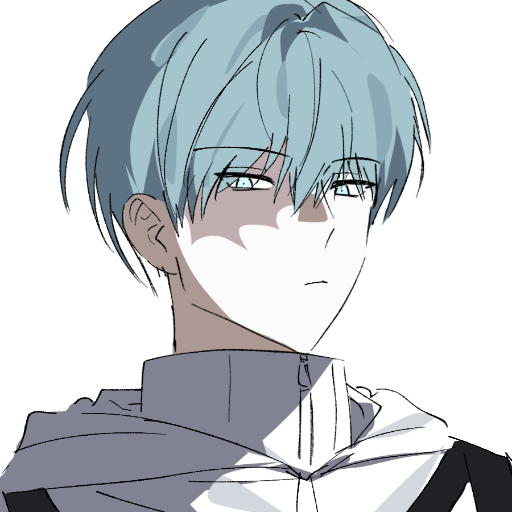
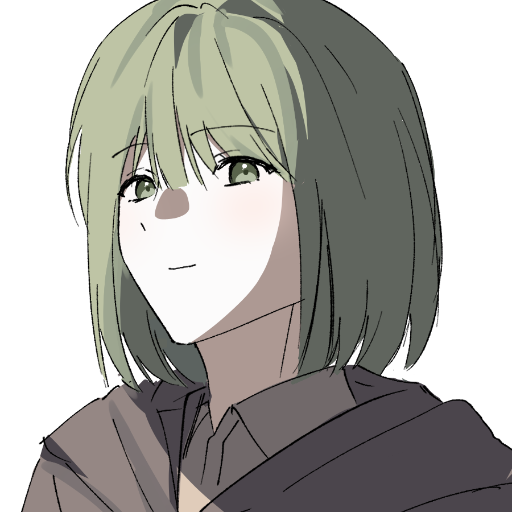
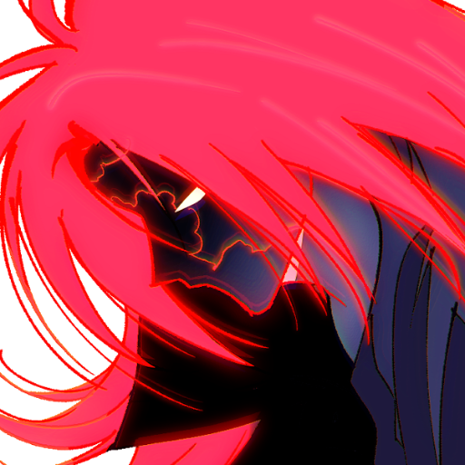
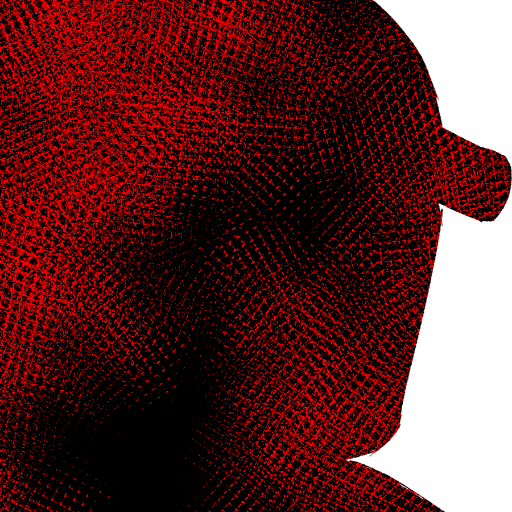

{kind=link}
호흡을 도와주는 산소 마스크,
목구멍까지 차오르는 쓰디쓴 액체,
전신에 엉겨 붙은 전선,
양손을 구속하는 쇳덩이,
그리고, 터질듯 빨리 뛰는 심장.
덜컹, 소리와 함께 실험관이 열리고, 당신은 액체와 함께 앞으로 쏟아지며 바닥을 구릅니다.
갑작스럽게 들이차는 산소에 폐가 아려와 숨 쉬기가 힘들고, 억지로 뜯겨져 나가는 전선이 따갑습니다.
바닥에 주저앉아 한참이나 헐떡인 끝에, 주변의 풍경이 눈에 들어옵니다.
이곳은 실험관이나 연구 자료로 가득한 어딘가의 실험실입니다.
푸르스름한 빛이 실내에 고여 주기적으로 깜빡거립니다.
어두운 종이로 뒤가 덧대인 유리창에 당신의 모습이 비칩니다.
당신 역시 환자나 입을 법한 옷을 입고 있습니다.
창백한 인상입니다.
그리고 당신의 앞에는 아주 어린 아이가 서있습니다.
아이는 죽은 듯이 누워있는 안드로이드 옆을 지키고 있습니다.
당신이 몸을 일으키자, 아이는 안드로이드의 눈을 감겨주곤 이쪽으로 다가옵니다.
오데트:정신이 들어?
아이의 얼굴은 굉장히 낯익습니다.
채도가 낮고 밝은 머리, 그리고 푸른색 눈.
자세히 살펴보면, 오데트(델타)와 굉장히 닮았다는 사실을 깨닫습니다.
다른 점이 있다면, 외형이 한참 어려보인다는 부분이겠죠.
그 얼굴을 본 순간, 당신은 아주 예전의 일을 떠올립니다.
오데트와 콘라드,
승급전,
그리고 차현안.
그러고보니 차현안은 어디에 있죠…?

오데트:일단 멀쩡한 것 같아 다행이네. 구하러 왔어. 그 사람은... 미안, 나도 어디로 간 건지 모르겠어.
오데트:나는 잡혀가 있었어서 정확한 상황은 잘 몰라. 실험실에만 있었거든... 당신이 어딘가에 산 채로 포획되어 있다는 정보를 얻어서 탈출한 거고.
AOC에 의해 악신이 소환되고, 당신은 아자토스의 찌꺼기와 싸우다 죽었잖아. 이후 남은 사람들끼리 신 정부를 수립해 이어나가다, 테러가 발생한 건데... 안전지대가 불타는 걸 봤다고?
오데트:...그건 잘 모르겠어. 콘라드도, 그 사람도, 지금 어디에 있는지 모르겠으니... 나는 테러 직후 그 집단한테 잡혀갔거든. 능력을 추출하기 위해서. 그래서, 생명력을 잃었더니 지금 이런 모습이 된 거고. ... 그나저나, 왜 그런 생각을 하는 거야?
오데트:밖은... 악신은 퇴치됐지만, 원인 불명의 멸망이 진행 중이야. 그 사이비 집단이 활개 치고 다니고. 나도 자세한 건 모르지만, 그 집단은 무언가를 알고 있을 수도. 나랑, 당신을 납치한 것부터가...
오데트:그 악신과 싸운 후로는 꽤 많은 일들이 있었으니까. 당신은 모를 만하지. ... 당장 더 움직이긴 어렵겠지만. 여기까지는... 저 안드로이드의 도움을 받았어. 이름은 에다바. 당신을 구하기 위해, 나를 위해... 여기까지 와 준 이야.
오데트:...당신도 무언가 많은 일이 있었나 보네. 나는 괜찮아. 지금 당신과 같이 가더라도 걸림돌만 될 테니까. 자세한 건... 나중에 말하자. (작게 기침했다.)
실험실 내부의 [연구 자료], [좌측 실험관], [우측 실험관], [특별 보관실]을 확인할 수 있습니다.
당신을 집중적으로 연구한 결과가 나와있습니다.
키, 체중, 이름, 신변에 관한 모든 정보 뿐만이 아니라 세포 단위로 당신을 분석했습니다.
물론 대부분이 ‘불명’으로 나와있습니다.
가볍게 훑어 보는 도중 형광펜으로 강조된 문장을 발견합니다.
‘▒▒전의 신체 구조 데이터와 99% 이상 일치하지 않음'.
알아볼 수 없습니다.
금속형 크리쳐가 보관되어 있습니다.
파편 별로 조각난 크리쳐, 통째로 포획되어 가사 상태에 빠진 크리쳐, 의식이 있는 크리쳐…….
그 중 하나가 안구로 추정되는 부분을 데로록 굴려 이쪽으로 시선을 둡니다.
어쩐지 형용할 수 없는 기분이 듭니다.
생체형 크리쳐가 보관되어 있습니다.
잘려나간 크리쳐의 일부부터, 포획되어 가사 상태에 빠진 크리쳐, 의식이 있는 크리쳐…….
그 정체를 아는 당신으로서는 인체 실험으로 밖에 느껴지지 않습니다.
마찬가지로 형용할 수 없는 기분이 듭니다.
두 실험관을 전부 살펴보면, 도합 몇십 체의 크리쳐가 이곳에 갇혀있다는 사실을 알게 됩니다.
엄중한 소독 절차를 거친 뒤에 들어갈 수 있습니다.
실 평수는 굉장히 좁습니다.
크리쳐와 관련된 물건과 증거품이 보관되고 있습니다.
| 기준치: | 80/40/16 |
| 굴림: | 35 |
| 판정결과: | 어려운 성공 |
깨끗하게 복원된 제복과 무기를 발견합니다.
환자복은 활동하기 불편하니, 갈아입을 수 있습니다.
전부 돌아보고 나오면, 당신은 오데트가 창백한 안색으로 바닥에 쓰러져있는 장면을 목격합니다.
오데트:(연신 기침한다.) 괜찮아. 실험 후유증 때문이니까.
나는, 여기에 두고 가. 방금 통신기를 찾아 예전에 사용했던 AOC 전파에 잡히도록 연락을 넣었으니, 운 좋으면 지원이 올 거야.
... 젠장, 내가... 무얼 해줄 수 있지? 오데트 씨.
오데트:...지금 AOC로 가. 그 사람을 만날 수 있을 거야.
조심, …….
말을 제대로 잇지 못한 채, 오데트는 기절해버립니다.
자세히 보니 입술에 각질이 일어나있고, 야윈 팔다리 곳곳에 멍자국이 있으며, 영양 상태가 굉장히 나쁩니다.
오데트가 무슨 말을 하려고 했는지 결국 이해하지 못했지만, 이 시기에 AOC라고 하면…….
당신이 죽은 이후의 차현안,
안대를 착용한 채 전광판에 나오던 모습 밖에 떠오르지 않습니다.
X제약 회사 밖으로 나오면, 바깥의 풍경은 예전에 본 미래와 확연히 다릅니다.
푸른 빛을 발하는 중앙관리체제가 떠있고, 안드로이드로 추정되는 사람들이 돌아 다니긴 하지만,
공통점은 그것 뿐입니다.
군데군데 폐허가 된 건물, 길거리에 앉아서 하늘을 올려다 보는 사람들,
천공에 거대하게 드리운 행성의 그림자, 파손된 도보.
차가 다니지 않는 도로를 따라 걷다 보면, 전광판에서는 아나운서가 불안한 표정으로 입을 열어 말하고 있습니다.
"크리쳐 사태가 종식되었음에도 새롭게 나타난 인류를 향한 위협에 안전 지대의 대부분이 공포에 떨고 있습니다."
낯선 행성의 방문에 관해 길거리에서 사람들에게 인터뷰하는 모습까지 보입니다.
"너무 무서워요."
"외계인의 침공?"
"지금이 우리에게 영웅이 필요한 시점입니다."
척봐도 수상해 보이는 사람들이 하얀 로브를 입고 정면을 똑바로 응시하며 입을 뗍니다.
???:하지만 두려워 마세요, 영웅은 곧 돌아옵니다.
우리는 구원받을 것입니다.
문득 당신의 등에 소름이 돋습니다.
정신을 잃기 전,
테러가 일어난 안전지대에서 눈을 떴을 때 당신을 공격한 사람과 목소리가 완전히 똑같습니다.
저게 설마 테러 집단, 사이비... ... (분명 이전엔 저 전광판에 차현안 씨가, ... AOC 건물로 향하는 발걸음 빨라지며.)
건물에 도착하면, AOC라고 해서 그렇게 깨끗한 상태는 아닙니다.
입구를 지키던 세큐리티까지 전부 도망쳤는지, 건물은 텅 비어 있습니다.
어디로든 가볼 수 있지만, 소장의 방을 제외하고는 전력도 돌지 않는데다가 쥐가 들끓어 다니기 좋은 곳은 아닙니다.
한 마디로 정의하자면, 폐건물입니다.
회귀라는 사실이 지금도 크게 실감나진 않지만, 어떻게 봐도 당신이 겪었던 일과는 확연히 다릅니다.
원래대로라면 차현안이 안전지대를 크게 부흥시켜서, 당신이 올 때까지 평온하게 안전지대를 수호해야 하지 않나요?
지금 상태로는 당장 멸망해도 이상하지 않습니다.
엘리베이터도 운행하지 않으므로 최고층까지 걸어서 올라가야 합니다.
소름 끼치는 물소리, 그리고 문을 열 때마다 귀를 자극하는 녹슨 소리를 이기고 최고층으로 향합니다.
섬뜩한 기분과 함께 복도를 지납니다.
낯선 기시감이 스쳐 지나가고, 소장실의 문을 열면…….
{kind=link}
{kind=link}
누군가가 거대한 전면창을 등지고 서있습니다.
전신에 딱 달라붙는 롱 코트, 깔끔하게 고정한 안대, 꼿꼿하게 선 자세,
그리고, 하나로 올려 묶은 붉은 머리.
{kind=link}
나타샤 폴 블레인:AOC의 전 영웅이 여긴 어쩐 일로 오셨습니까.
당신은 안대를 착용한 나타샤와 마주합니다.
짙게 다크써클이 내려온 눈가, 초췌해질 대로 초췌해져 움푹 패인 양뺨이 씰룩거리며 반항적인 미소를 지어냅니다.
나타샤 폴 블레인:독이 들은 와인이라도 대접할까요?
... ... 독이 든 와인을 어떻게 알고 있지?
나타샤 폴 블레인:갑자기 와서는, 용건이 뭐죠? 그냥 농담한 겁니다만.
나타샤 폴 블레인:행방불명이라 모릅니다. AOC 대원의 대부분이 사망했으니, 죽었을 수도 있겠죠. ... (잠깐 인상 쓰고.) 당신도 죽지 않았습니까?
나타샤 폴 블레인:그냥, 풍경을 보고 있었습니다. 에보니의 유언을 따라서 안전지대를 지키려 했지만, 보다시피 더 이상 통제할 수 없는 상황이 되었잖습니까. 그러니 손을 놓았죠. 때로는 어쩔 수 있는 부분도 있는 법입니다. 오는 길에, 못 보셨나? 테러 이후의 상황은 뭐... 이렇습니다만.
나타샤는 더 대답하지 않습니다.
이런 충격적인 상황에,
| 기준치: | 60/30/12 |
| 굴림: | 7 |
| 판정결과: | 극단적 성공 |
당신은 대화 도중에 위기감을 느낍니다.
| 기준치: | 60/30/12 |
| 굴림: | 77 |
| 판정결과: | 실패 |
| 기준치: | 80/40/16 |
| 굴림: | 68 |
| 판정결과: | 보통 성공 |
문득 나타샤의 옆으로 시선이 옮겨갑니다.
아무렇게나 밀려난 소장용 테이블, 그 위에는 서류가 놓여 있습니다.
그 서류에 찍힌 문양은 당신이 연구소에서 본 것과 같습니다.
그리고 그 연구소는,
사이비 종교의 것이었죠.
그 순간, 품에서 단도를 꺼낸 나타샤가 기습해옵니다.
거리를 단숨에 좁혀와, 장거리 탄환을 쓸 겨를이 없습니다.
대 크리쳐 살상용 무기는 근접 모드만 사용 가능합니다.
{kind=link}
나타샤 폴 블레인:마음 같아선 그냥 보내드리고 싶었는데요.
당신을 보면, 어쩐지 동류를 보는 것 같아서.
숨결이 닿을 듯 가까워진 거리에서 단도를 쥔 손에 힘을 주며 나타샤가 웃습니다.
그 얼굴에 보이는 광기는 분명히 익숙합니다.
그야, 당신은 그 손으로 똑같은 표정을 지은 차현안을…….
나타샤 폴 블레인:이대로 두면 계획에 방해가 될 것 같으니, 어쩔 수 없죠.
하지만 망설일 시간은 없습니다.
TFR에서 습득한 스킬, 눈의 검과 얼음 방패 사용이 가능합니다.
나타샤 폴 블레인:
| 기준치: | 95/47/19 |
| 굴림: | 69 |
| 판정결과: | 보통 성공 |
| 피해: | 5 |
| 기준치: | 45/22/9 |
| 굴림: | 71 |
| 판정결과: | 실패 |
{kind=link}
나타샤의 대미지, 4 차감.
월광, HP 1 감소.
| 기준치: | 90/45/18 |
| 굴림: | 64 |
| 판정결과: | 보통 성공 |
| 피해: | 8 |

월광의 대미지, 4 추가.
나타샤 폴 블레인:
| 기준치: | 45/22/9 |
| 굴림: | 11 |
| 판정결과: | 어려운 성공 |
나타샤 폴 블레인:순순히 물러났다면 좋았을 텐데요.
| 기준치: | 95/47/19 |
| 굴림: | 15 |
| 판정결과: | 극단적 성공 |
| 피해: | 7 |
| 기준치: | 45/22/9 |
| 굴림: | 6 |
| 판정결과: | 극단적 성공 |
| 기준치: | 90/45/18 |
| 굴림: | 51 |
| 판정결과: | 보통 성공 |
| 피해: | 2 |
월광의 대미지, 4 추가.
나타샤 폴 블레인:
| 기준치: | 45/22/9 |
| 굴림: | 32 |
| 판정결과: | 보통 성공 |
나타샤는 입에 고인 침을 뱉고 살벌한 눈으로 이쪽을 응시합니다.
맞닿은 칼날 사이로 끼기긱, 스산한 소리와 함께 스파크가 튑니다.
그때, 나타샤의 나머지 손에서 무언가가 나옵니다.
단숨에 거리를 다시 벌린 나타샤가 던진 것은…….
{kind=link}
수류탄입니다.
| 기준치: | 45/22/9 |
| 굴림: | 63 |
| 판정결과: | 실패 |
당신은 재빠르게 몸을 날려 수류탄에서 거리를 두고 바닥을 구르지만,
수류탄이 폭발하며 전면창이 깨집니다.
굉음과 함께 큰 여파가 발생합니다.
AOC 건물 창문 밖으로 튕겨져 나온 당신의 뒷목을 타고 식은 땀이 흐릅니다.
잊고 있었나요?
소장실은 최고층입니다.
그리고 AOC는 지상 37층까지 있는 빌딩이었죠.
| 기준치: | 50/25/10 |
| 굴림: | 15 |
| 판정결과: | 어려운 성공 |
살던 집 근처의 37층짜리 아파트가 125m 가량이었다는 쓸모없고 무서운 정보만 깨우칩니다.
당신은 아무 장비도 없이 125m를 그대로 추락합니다.
거꾸로 된 세계가 빠르게 스쳐지나고, 눈을 질끈 감은 그때…….
누군가가 당신을 잡아 채 옆건물 창문을 깨고 그대로 난입합니다.
사방으로 창문 파편이 파티클처럼 날립니다.
팽팽하게 한계까지 당겨진 로프가 탄력 있는 소리와 함께 풀리고,
누운 당신의 위로 엎어진 사람이 크게 어깨를 들썩입니다.
익숙한 색깔의 머리카락이 이리저리 흩어지더니, 숨을 들이쉬며 몸을 일으킵니다.
지나치게 가까운 거리에 코와 코가 가볍게 맞닿습니다.
월광, 차현안과 재회합니다.
짧은 침묵, ‘생전'의 차현안과 만나는 게 얼마만인지 모르겠습니다.
그건 그러니까, 당신이 AOC 옥상에서 손 하나만 붙잡고 매달려 유언을 남기던 순간이었나요.
감회에 젖을 시간도 없이, 차현안은 당신의 멱살을 쥐고 소리를 지릅니다.
차현안:...어떻게, 살아있었다고 연락 한 번을 안할 수가 있어?!
울분에 찬 목소리로 소리지르는 차현안에게서 눈물이 떨어집니다.
(제게 잡힌 멱살이고 뭐고, 당장 당신을 온 힘 다해 꽉 끌어안는다. 그리고, 주체할 수 없이 바로 쏟아져 나오는 눈물에... ...) 차아, 현안 씨... ... ...
차현안:(잠시 멈칫하고는 그대로 마주 끌어안는다. 여전히 계속 나오는 눈물에 말을 잇기가 어렵다. 최대한 힘 주어, 꽉 끌어안으며...) ... 나는, 네가, 죽은 줄로만 알고...!
차현안:...살아, 있었으면... 말했어야지. 나는, 흐윽... 그것도 모르고... ... (살아있기에, 따뜻하다. 소리 내 울기만 하다가.) ... 무슨, 무슨 일이 있었던 거야. 분명히, 죽었었잖아. 그때. 왜, 이제서야... ...
차현안:... ... 분명히, 죽었었는데. 분명히... 그러면 나, 나는... ... (떨면서 말을 제대로 잇지 못하고.) ... 미친, 놈들. 역시, 빨리 없애버려야 했는데... ... 나는, 사이비 집단과 나타샤 씨의 지배에 반대하며 오데트 씨를 구출하려고 했어. 콘라드와 함께. 연구소에서 오데트 씨를 만나서, 여기로 온 거고... 소원이라니? 도시가 불탄 건... ... 테러 때의 일인데. 그때도 살아있었던 거야? 근데 왜 연락을...!
차현안:... ... (말없이 꽉 끌어안는다.) 응. 지금 안전지대의 관리자는 나타샤 씨야. 실질적으로 장악 중인 건 그 사이비 집단 같지만... 오데트 씨는 다른 곳으로 옮겨줬으니 아마 안전할 거야. 콘라드랑 만났을 거고. (...) ... 보고, 싶었어. 정말로... ... 다시는, 못 볼 줄만 알았는데... ... 내가, 그렇게, 너를 죽게 내버려두어서... ...
조금 진정한 차현안은 '그날'의 이야기를 합니다.
잿빛 하늘, 아자토스의 일부가 강림하는 순간.
천둥과 번개가 안전지대에 내리꽂히고 곳곳에 크리쳐가 아닌 괴물돌이 날뛰며 민간인을 죽이고 찢어 삼키던 그때입니다.
당신과 차현안은 그들을 제압하고 민간인을 구출하며 어마어마한 수적 열세에서 간신히 버티고 있었습니다.
그때, 뒤에서부터 날아온 뾰족한 삼지창이 당신의 배를 뚫습니다.
심해인의 웃음소리가 머릿속에 어지럽게 돌아다닙니다.
차현안이 황급히 당신의 어깨를 붙잡지만, ‘인간'의 몸인 당신은 속수무책으로 쓰러지고 맙니다.
입을 달싹일 때마다 핏줄기가 입에서 흘러나오고, 차현안은 당신을 등에 업은 채 자리를 벗어납니다.
내 목소리 들리지?
정신 차려…….
아스라이 멀어지는 목소리를 마지막으로, 당신은 차현안의 등에서 정신을 잃었습니다.
하지만 차현안은 한참이나 당신의 시체를 업고 의사와 병원을 찾아다녔습니다.
이야기를 들은 당신은, 문득 깨닫습니다.
차현안이 들려주는 과거는 당신이 알던 이야기와 궤가 다릅니다.
| 기준치: | 60/30/12 |
| 굴림: | 5 |
| 판정결과: | 극단적 성공 |
‘에보니, 나타샤의 이야기와 당신과 차현안의 이야기가 바뀌었음’을 깨닫습니다.
한 가지 다른 점이 있다면 차현안은 당신의 안드로이드를 곁에 두지 않았다는 것,
그리고, 이 이야기대로라면…….
당신은 정말로 죽었어야 합니다.
조금도 생존의 여지도 없이.
그런데 어째서 테러가 발생한 순간으로 타임리프할 수 있었을까요?
차현안:... 왜, 왜 그래. 괜찮아?
차현안:에보니 씨는... ... 그때 죽었어. 아자토스의 찌꺼기를 쓰러트리고는. 아마 그러니 나타샤 씨가 지금, 이렇게 되었겠지...
차현안:... 당연하지.
차현안:왜, 뭐가? 뭔가 다른 기억이라도 남아 있어? 응?... ... 그대로 잡혀가서, 깨어난 지 얼마 안 되었다고 했잖아. 그러니 혼란스러울 수밖에 없으려나... 괜찮아, 이젠. (꼭 끌어안아 머리 기대고는...)
차현안:... ... 완전 이상한 기억이잖아. 그동안 악몽이라도 꾼 거 아냐? 걱정하지 마, 나는... 멀쩡하니까. 네가 없는 동안 많이 슬펐지만... 그것도, 이젠 괜찮아. (얌전히 눈 감고 손길 느낀다. 울컥하는 마음에 다시 눈시울 붉어지지만...) 그보다, 몸은 괜찮아? 오데트 씨는 완전 엉망이던데. 비슷하게 실험을 당했다거나... 그런 건 없고? (몸 살핀다.)
차현안:... 그래? 행복했다고? 그렇다면... 조금은, 다행인 건가... (이제 더 행복할 거란 말을 해주고 싶지만, 종말이 코앞이기에 머뭇거렸다.) 그래도, 이제는... 다신 더 헤어질 일은 없겠지. 그치? 또, 너를 잃을 수는 없어... ... (고개 끄덕인다.) 응. 나랑 콘라드 말고도, 일행이 조금 더 있거든. 이 사태에 반대하는 이들이. 미리 짜둔 계획도 있고... 하늘의 행성은, 글쎄. 나도, 다른 사람들도... 정확히 아는 사람은 없어. 그저, 멸망이 다가오고 있다는 사실만 알지. ... 그 악신을 어떻게 막아냈는데... ... (침울해진다...) ... 정말로? (급하게 몸 살피며.) 괜찮아? 아직도 아파? 다른 나쁜 짓을 당하지 않았다면 다행이지만... ... 돌아가서 치료해 줄게.
차현안:... ... 그래. 다시는... 헤어지지 않을 거니까. ... 응. 너랑 살았던 집에... 아직도 거기 지내거든. 거기에, 동료들이 있을 거야. 콘라드랑 오데트 씨도. (옅게 미소 짓는다.) 하하... 그래. 그때도, 분명히 멸망이라 생각했었지. 하지만 그때도 포기하지 않았으니까. 이번에도 당연히... ... 포기하지 않아. (...) 어서 돌아가자. 작전에 관해서도 이야기해야 하고, 다친 것도 치료하고, 맛있는 것도 먹고... 그래야지.
차현안:(손잡고 일으켜 주며.) 딱히 지낼 곳이 마땅치 않았거든. 그때나, 테러 때문에 많은 곳들이 붕괴되고 불타서... 우리 집도 많이 멀쩡하지는 많지만. (작게 웃고.) ... 케이크 거리라, 남아 있긴 하지만... 먹을 수는 없을걸. 몇 년 전 거라서. (함께하던 때의...)
가는 길은 그립고도 무척 익숙합니다.
여전히 어수선한 길거리 곳곳에는 그리운 가게나 건물을 발견할 수 있습니다.
거대한 행성이 나타나고, 지구 멸망이니 뭐니 세상이 어수선해도 변하지 않는 것은 분명히 있네요.
그리하여 도착한 곳은, 함께 살던 집.
평화롭던 나날의 일들이 스쳐 지나갑니다.
안에는 일반 대원으로 보이는 사람 열 명 남짓, 콘라드, 그리고 침대 위에 누운 오데트가 있습니다.
차현안:나 왔어.
차현안이 당신을 데리고 그 안으로 들어옵니다.
콘라드가 당신을 보고 가볍게 눈짓합니다.
옛 동료를 만나니 감회가 새롭네요.
비록 좋은 사이는 아니었을지라도!

콘라드는 눈을 피하며 인사합니다.
콘라드 신:(분위기가많이변했군)
콘라드 신:네, 뭐... 알아서.
차현안이 겉옷을 벗어 걸어두며 콘라드와 대화합니다.
오데트 씨는 좀 어때?
콘라드 신:여전합니다. 정신을 못 차리고 있어요.
(시선 돌리고.) 월광 씨, 오데트가 당신을 구했다고 했죠. 무슨 일이 있었던 겁니까?
콘라드 신:... ... 그렇습니까. 그러면 바로 AOC로 향한 건가요? 오데트가, 이런 상태로도 당신을 구하러 가서 쓰러졌는데. 어째서 지켜주지 않은 거죠? 그대로 다시 사이비 놈들한테 발견됐으면 어쩌려고...! (살짝 울컥하여 말하지만, 그저 분노는 아닌 듯. 당연하게도, 그저 오데트를 아끼기에 감정적으로 나오는 말들일 뿐이다...)
콘라드 신:그래도 그렇지, 이런 상태인 오데트를 두고 어떻게... ... (말없이 입술 꾹 깨물고는 고개 돌린다.)
차현안:그만, 그만. 잘못 없다는 거 알잖아. (둘 사이 가로막는다.)
그나저나... 나타샤와 종교의 낌새가 좋지 않거든. 잠입을 서두르는 게 좋을 것 같아.
차현안:응, 잠입. 정보를 캐려면, 가장 가까운 곳에서 지켜봐야지.
다음 임무에 관해 설명할게. 여태까지 우리가 조사한 결과, 지금 다가오는 행성과 종교는 밀접하게 관련되어있을 확률이 높아. 최우선은 다가오는 멸망의 진상 규명 및 대처 방안 모색이야.
최악의 경우에는…….
행성은 한층 더 가까워진 것 같다는 착각이 듭니다.
아니, 착각이 아닐지도 모릅니다.
차현안은 빈 탄창을 바닥에 던지며 말합니다.
차현안:전면전까지 각오하도록 해.
어쩌면 인류의 마지막이 될지도 모를 전쟁이 다가오고 있습니다.
차현안:... 그래. 적어도 관련이 없지는 않겠지. AOC가 망했더니, 웬 이상한 놈들이 나타나선... ... (한숨 깊게 쉰다.) 바로 작전 개시할까? 아니면, 조금 쉬었다 가도 괜찮고.
차현안:그럼, 이 정도야 뭐. 무엇보다... 널 다시 만났는데.
(등 툭툭 토닥이고 만족하기)
차현안:그러면, 바로 갈까? 조금 쉬어도 괜찮은데. 너는 어때, 몸 상태는?
차현안:응, 어디? 아직도 아파? 한번 보자.
차현안:(이리저리 살피다가...) 음... 잘 안 보이는데? 크게 다치진 않았나 봐. 다행이다.
차현안:... 응, 가자. (마음 같아서는 조금이라도 더 일상 같은 시간을 보내고 싶었지만...)
잠입 인원은 당신과 차현안 두 사람으로,
콘라드는 의식을 잃은 오데트의 곁을 지키고자 숙소에 남습니다.
떠나기 전, 콘라드는 당신에게 와서 무례를 사과합니다.
콘라드 신:… 방금은 죄송했습니다. 부채감처럼 오데트를 지켜야 한다는 압박감이 남아있어서...
콘라드 신:(예전이라면......) 그때는 제 잘못이 더 확실하지 않았나요? ... 음. 근데, 그러고 보니 분위기가 참 많이 바뀌셨네요. (거의 다른 사람이 된 수준인데) 뭐... 아무튼. ... 딱히 이해까진 기대하지 않았는데... 감사합니다. 테러 당시, 오데트를 구하지 못했으니까요. 안전지대에 뒤늦게 도착해서 찾아 헤매던 지난 2년이 참 길었고… 후회스러웠습니다. 지키고 싶었던 사람이 내 손을 떠나서 크게 다치거나 망가져 버렸을 때의 기분을, 상상할 수 있으신가요?
콘라드 신:... 확실히, 많이 변하셨네요. 그간 무슨 일이 있었는지는 몰라도. (다른 인간이다...) 뭐... 그렇다면야. 그때의 잘못은 많이 후회했으니까요. (...) ... 네. 2년이 어찌나 길게 느껴지던지... 하하. 아마 차현안 씨도 그렇겠죠. ... 그동안 같이 있었는데, 많이 힘들어하시더군요. 월광 씨는 이런 고통 안 겪었으면 좋겠는데요. 가장 좋은 건 다시는 헤어지지 않는 거겠지만. (표정 어두워진다.) 그렇게 기껏 만난 오데트가 저런 상태이니... ... (잠시 침묵.) 월광 씨도 몸 안 다치게 조심하시죠. 차현안 씨 생각해서라도.
콘라드 신:... 그렇습니까? 그런 짓을 저질렀는데도... (... ...) 꼭 그래야 할 텐데요. 안 그래도 늘 실험만 당하던 애를... (주먹 꾹 쥐었다.) 네, 다녀오시죠. 잠입이니, 들키지만 않는다면 성과는 있을 겁니다. 그놈들은 반드시... 이 사태와 관련되어 있으니. ... 몸조심하세요.
콘라드와 대화가 끝나자, 차현안은 당신에게 종교인이 입을 법한 하얀 의복을 건네줍니다.
수수한 성당 성가대복 같은 옷인데,
몸통 부분이 넉넉할 뿐만 아니라 팔부분의 소매폭이 무척 넓고 하늘하늘거립니다.
대 크리쳐 살상용 무기는 분해해서 큰 부품별로 허리띠에 둘러줍니다.
브리핑이 시작됩니다.
잠입 장소는 이곳에서 몇십km 떨어진 A시의 공터,
그 부근에 지하 벙커로 향하는 통로가 있다고 합니다.
놀랍게도 도착지는 당신과 차현안에게 지나치게 낯익은 장소입니다.
빈 공터, 차현안과 똑같이 생긴 크리쳐가 나왔던 곳,
기습당해 멀리 날아간 차현안이 벙커의 입구를 발견해 시민들을 구해낸 그 장소와 거의 일치합니다.
차현안:... 그러게. 되게 오랜만이네...
달라진 게 있다면, 벙커의 입구가 예전보다 훨씬 더 커졌다는 점일까요.
묵직한 쇳덩이로 된 문을 열면,
그 아래로 이어지는 계단은 제법 ‘제대로'되어 있어, 예전의 벙커를 확장하고 재구축했다는 느낌이 듭니다.
오래된 성당이나 교회에 들어온 듯한 느낌이 납니다.
여러 갈래의 복도가 개미굴처럼 뚫려있는데다, 수십, 아니, 수백 개의 방이 곳곳에 자리잡고 있습니다.
어디서부터 어떻게 봐야 할지 감이 안 올 정도로 말이에요.
그때, 손목에 착용한 휴대용 PC가 반짝거리더니, 작은 지도가 공유됩니다.
콘라드로부터 통신이 도착했습니다.
콘라드 신:그 종교의 내부 시스템을 해킹해서 CCTV를 분석한 결과 내부 구조도를 보내드립니다.
대부분 평범한 신도들의 방이라 조사할만한 구역을 한정할 수 있었어요.
미사 시간 내로 제가 체크한 곳만 확인해서 빠르게 빠져나오세요.
당신은 전해 받은 지도를 통해 [역사자료실], [수행실], [신전], [간부실], [교주실]에 갈 수 있습니다.
차현안:그간 계속 준비해 왔으니까.
크리쳐 사건 발발 이후, 등장한 모든 상급 크리쳐와 일반 크리쳐,
그리고 대부분의 크리쳐 사건에 관해 차곡차곡 정리되어 있습니다.
크리쳐를 향한 광적인 열의와 연구는 AOC 못지 않습니다.
대부분 당신과 차현안 역시 숙지하고 있는 지식입니다만,
당신이 아는 과거와 ‘특별히’ 달라진 부분이 있지 않나요? 어떤 날을 기점으로.
아자토스의 찌꺼기 강림 사건과 안전지대 테러 사건입니다.
각 사건에 관련된 두툼한 파일들을 찾아냅니다.
[아자토스의 찌꺼기 강림]
지금으로부터 4년 전이라고 적혀 있습니다.
어떻게 알아냈는지, AOC의 연구가 외계신을 소환하는 초석이 되었다는 것부터 진행 과정과 결과까지 상세하게 적혀 있습니다.
기록에 의하면, 에보니와 나타샤는 헬기를 타고 바로 옥상으로 직행했으며,
거기에는 발을 저는 늙은 연구원 하나가 동승했다고 합니다.
이후로는 당신도 아주 잘 아는 전개가 이어집니다.
‘그들은 한껏 저항했으나 외계신에게 이기지 못했고, 에보니가 희생하였으며, 나타샤는 홀로 남았다.'
그 사건에 휘말려 ‘사망’한 AOC 대원들에 관해서도 기록되었습니다.
정면을 보고 있는 당신의 증명사진 역시 그 페이지에 끼어있습니다.
기묘하게도, 붉은 글씨로 당신의 사진 위로 ‘특이점의 영웅'이라고 적혀있습니다.
마지막에는 천문학 관측이라는 단어와 함께 휘갈겨 쓴 문장이 눈에 띄네요.
{kind=link}
'계측할 수 없는 거리의 우주 너머에서 지구까지 보낸 신호 확인' '외계의 크리쳐?'
라는 말이 있습니다.
아니, 외계에 무언가 있다면 그건 크리쳐가 아니라 외계인 아닐까요…….
말을 맙시다.
다음 파일도 보나요?
[안전지대 테러]
이 파일에는 화재 재료의 조달, 경로 장악,
신 정부 사람들과 대다수의 AOC 대원들이 자리를 비우는 날을 비롯해 그날의 상세한 계획이 적혀 있습니다.
옆으로 한 장 넘기면,
안전 지대 전체를 상공에 찍은 듯한 지도에 화재의 시작 지점을 표기했습니다.
전체적으로 둥근 모양입니다.
| 기준치: | 50/25/10 |
| 굴림: | 72 |
| 판정결과: | 실패 |
얼마나 많은 사람이 죽었는지는 기록되어 있지 않지만, 잊으려 해도 잊혀지지 않는 풍경입니다.
일렁이는 불꽃, 곳곳에서 난무하는 비명소리,
그리고 누구든 제발 대답해달라고 빌던 차현안의 목소리까지.
그건 당신의 정신을 잃기 직전, 마지막 기억이기도 합니다.
나머지는 전부 아는 사실들입니다.
파일을 전부 보자, 차현안은 파일에 붙어있는 당신의 증명사진을 떼어냅니다.
그는 풀칠이 된 듯 끈적끈적한 뒷면을 잠시 만지더니, 허리띠에 고정한 검날 손잡이에 그것을 붙여 보여줍니다.
당신의 표정이 심각해보여 풀어주고자 하는 나름의 노력입니다.
차현안:... 네 사진이잖아. 이렇게라도 뭐라도 좀 남기려고. 저 파일에 붙어있는 게 별로기도 하고... (멋쩍게 미소...)
차현안:하하, 그렇지... ... 넌 안 죽었으니까. 살아 있으니까... ... (...) 응? 특이점? 글쎄... 잘 모르겠는데. 뭐지?
차현안:으음... 그러자. 다른 곳에 뭐가 더 있겠지.
신도들이 기도를 올리고 정신을 갈고 닦는 방이라고 대외적으로는 소개되는 것 같습니다.
의외로, 문을 열면 친숙한 느낌의 휴게실 같은 분위기입니다.
현재 미사중이므로 사람들은 없습니다.
벽면에 사진들이 빼곡하게 걸려 있습니다.
당신과 차현안이 입은 것과 비슷한 옷을 입고,
다양한 신도들과 가족처럼 다정한 표정으로 웃으며 찍은 사진들입니다.
이런 온기 어린 시선과 얼굴로 안전지대에 테러를 일으킨 종교라 생각하니, 어쩐지 소름이 끼칩니다.
| 기준치: | 60/30/12 |
| 굴림: | 91 |
| 판정결과: | 실패 |
그저 불쾌하기만 합니다.
차현안:
| 기준치: | 40/20/8 |
| 굴림: | 61 |
| 판정결과: | 실패 |
(찝찝...)
차현안:... 그래.
| 기준치: | 70/35/14 |
| 굴림: | 9 |
| 판정결과: | 극단적 성공 |
그러나, 당신은 유달리 사진에 많이 찍힌 열렬한 신도들 몇몇의 얼굴이 낯익다는 생각이 듭니다.
기억나는 것은 이쪽을 바라보던 일부의 선망 어린 시선들,
당신의 손을 잡고 구출되던 벙커 속의 시민들이라는 사실입니다.
차현안:음, 그럴까? (그러나 뭔가 걸리는 듯... 사진 계속 바라보고.)
그리고, 그들은 AOC나 정부 조직이 아닌데도 당신이 크리쳐라는 사실을 알고 있는 유일한 일반인들입니다.
그도 그럴게, 모두의 앞에서 광기 발작을 일으켜 차현안과 치고받고 싸웠으니까요.
그렇다면 이 벙커에 종교 시설이 세워진 이유도 이제는 이해할 수 있습니다.
그러나 절대로 죽지 않는 자신들의 구원자에 멋대로 어떤 기대와 어떤 열망을 품었는지는, 당신은 모를 일입니다.
차현안:(으아아) 어, 어... 그래.
차현안:(끄덕끄덕)
미사 중인 신전입니다.
그들의 기도와 미사 내용을 조금 엿들을 수 있습니다.
지각한 신도인척 신전 내부로 들어가 미사에 동참하면 잘 들을 수 있을 것 같습니다.
콘라드 신:종교에 속한 신도들과 마주치면 인사는 오른쪽 팔을 ㄱ자, 왼쪽 팔을 ㄴ자 모양으로 굽히며 “그어그어” 라고 해야 해요.
이 상황에 농담하는 건 아니죠? (........)
콘라드 신:당연하죠.
콘라드 신:저도 그런 건 잘 모릅니다만.
차현안:(모르는일)
신도들과 마주칩니다.
그러자,
그 줄에 있던 신도들이 미친사람인가… 라고 생각하는 게 분명한 표정으로 쳐다봅니다.
콘라드가 추가로 통신 메시지를 보냅니다.
콘라드 신:아님 말고요. (이모티콘)
콘라드 신:(듣지않음모르는일)
아무튼, 들려오는 미사 내용은 다음과 같습니다.
크리쳐는 신이 지구로 내려와 자신의 몸을 나눈 형태, 악한 인간들을 징벌하고 선한 인간을 지키는 신수다.
그리고 개중에서 특별히 ‘신의 사자’로 선택받은 사람들이 크리쳐가 된 인간이다.
특이점의 영웅 역시 그러한 신의 사자 중 하나이다.
머나먼 차원의 행성들이 일렬로 이동하고 있다.
그 궤도가 일치하는 순간, 오랜 숙원이 이루어진다.
행성이 하늘을 완전히 뒤덮는 날까지는 앞으로도 100년 남짓 남았지만,
미사가 끝나면 ‘개시'하여 그 날을 오늘로 앞당길 것이다.
모든 준비는 끝났다.
그간 우리가 해온 일들은 다름이 아닌 오늘을 위해서이다.
행성이 일렬로 서고 하늘이 덮이는 순간 우리들의 숙원은 이루어진다.
차현안:... (표정 굳고, 네 팔 잡아끌어 조심스럽게 빠져 나온다.) 별 미친 헛소리들을...
차현안:그러게... AOC에 대해서도 충분히 연구한 게 아닌가? 무슨 소리를 해대는 거야, 도대체. AOC가 신의 사자 같은 걸 양산해 냈을 리가 없잖아. 애초에 크리쳐도... 미고가 가져온 거고. ... 뭐가 이리 허술해?
차현안:... ... (표정 어두워졌고.) ... 그래.
간부실입니다.
컴퓨터를 비롯한 다양한 사무용품이 놓여 있습니다.
당신은 컴퓨터의 바탕화면에 있는 폴더를 뒤질 수 있습니다.
| 기준치: | 20/10/4 |
| 굴림: | 21 |
| 판정결과: | 실패 |
특별한 건 보이지 않습니다.
다시 찾아볼까요?
차현안:응? 그래. 뭐가 있으려나...
| 기준치: | 20/10/4 |
| 굴림: | 18 |
| 판정결과: | 보통 성공 |
여기... 뭔가 녹취록 같은 게 있네.
나타샤와의 대화 기록을 확인할 수 있습니다.
장소는 소장실.
양손으로 얼굴을 감싼 나타샤가 힘겹게 대화를 이어가고 있습니다.
간부로 추정하는 사람이 책상 위에 서류를 올리고 말을 이어나갑니다.
간부:당신에게도 나쁜 일은 아니라고 생각합니다. 잘 생각해보세요.
나타샤 폴 블레인:월광 씨는 이미 죽었습니다.
간부:아닙니다. 분명히 데려올 수 있으니 저희를 믿어주세요.
에보니 씨가 두고간 세상을 지키고 싶지 않습니까?
나타샤 폴 블레인:웃기는군요. 안전지대는 당신들이 저지른 테러로 인해 붕괴되었습니다.
간부:어쩔 수 없었습니다.
특이점의 영웅을 소환하기 위해서 그 정도의 희생은 불가결하니까요.
나타샤 폴 블레인:내가 당신들에게 협조해야 하는 이유를 모르겠군요.
간부:그럼 이건 어떤가요, 나타샤 씨.
월광 님이 돌아온다면 당신은 죽을 수 있을지도 모릅니다.
당신을 죽일 수 있을 만큼의 강자는 이 세계에 더는 없으니까요.
나타샤 폴 블레인:……
간부:중앙 관리 체제를 빌려주세요.
나타샤의 얼굴에 자포자기한 기색이 역력합니다.
사실은 이런다고 에보니는 살아 돌아오지 않는건 알고있을 것입니다.
다만, 눈을 통해 파고든 악신 때문에 이성적인 생각은 불가능한 거겠죠.
차현안은 도저히 이해가 가지 않는다는 표정으로 당신을 쳐다봅니다.
당신 역시 어쩌다 나타샤가 이렇게 되었는지 가늠할 수 없겠지만요.
차현안:... 이게 무슨... ... 나타샤 씨가, 어쩌다가 이렇게 된 건지.
차현안:... 악신이? 그건 이미 죽은 거 아닌가?
차현안:... ... 뭐? 대체 어떻게? 아니... 그런 건 어떻게 알고?
차현안:... ... 그게, 무슨... (혼란스러운 표정.) 아니, 대체 무슨 일이 있었던 거지? 나는 그냥, 갑자기 나타샤 씨가 이상해진 줄로만 알았는데. (... ...) ... 그렇구나. 무의식중에 뭔가... 들었을 수도 있겠네. ... 일단은 다른 곳도 갈까.
차현안:... 응.
두 사람이 들어서자마자, 무언가 잘못 밟았는지 자동으로 홀로그램 입체 영상이 재생됩니다.
방 전체에 검은 우주, 그리고 반짝이는 별들이 투영됩니다.
나래이션이 들려옵니다.
"저 행성은 사실은 잠든 신들의 요람입니다."
"우리의 눈에 보이는 행성 외에도 6개의 거대한 행성들이 가까워지고 있습니다."
"즉, 일곱 악신들이 아자토스의 찌꺼기가 다녀간 흔적에 이끌려 모여들고 있다는 의미입니다."
"수많은 세계선의 크리쳐 사태, 그리고 그 끝으로 이어지는 멸망의 유력한 사유가 바로 이것입니다."
당장 눈앞에 보이는 하나의 행성이 끝이 아닙니다.
총 7개의 행성들이 차츰차츰 가까워집니다.
3D 그래픽 영상들이 두 사람의 주변을 빙글빙글 돌아가며 각기 다르게 생긴 행성의 모습을 보여줍니다.
다가오는 행성들에 관한 정확한 정보를 입수합니다.
충격적인 사실을 전해들은 월광과 차현안,
| 기준치: | 59/29/11 |
| 굴림: | 83 |
| 판정결과: | 실패 |
차현안:
| 기준치: | 40/20/8 |
| 굴림: | 66 |
| 판정결과: | 실패 |
rolling 1d5
()
5
5
rolling 1d5
()
5
5
저, 저게 무슨... ...
차현안:... 이게, 무슨... 소리야?
"그 열쇠는 특이점의 영웅입니다."
차현안:그러니까, 그 특이점의 영웅이니 뭐니가 대체 뭔데...!
그때, 밖에서부터 사이렌 소리가 들립니다.
그와 함께, 나타샤의 목소리도 들려옵니다.
차현안:... 뭐, 뭐야?
차현안:... ... 설마,
이런, 미친... ... ... 빨리 가자.
의복을 벗어 던지고 황급히 거리로 나갑니다.
나타샤가 직접 무언가 공지하는 일은 없었던 건지, 당황한 표정으로 우왕좌왕하는 사람들의 모습이 보입니다.
저 멀리서부터 안드로이드 군단이 파도처럼 밀려옵니다.
표정 없는 얼굴의 안드로이드들이 어물쩍거리는 시민들을 하나씩 끌고 데려갑니다.
더 이상 망설일 수 없습니다.
나타샤와 저 대군을 제압해야 합니다.
다행인 점은, 당신이 중앙 관리 체제를 제압하는 방법을 알고 있다는 것일까요.
차현안에게 쉴드를 파괴할 장소를 지정하고, 나눠서 공략하게 합시다.
차현안:으, 응?
차현안:자, 잠깐, 뭐라고? 무슨 이야기야, 그게? ... 이것도, 다른 정보들이랑 비슷하게 알고 있는 건가?
(떨어지기 전에 끌어당기고, 한 번 꽉 안는다.) 일단은 의심하지 마. 나 믿지? 연락하지 못해서 미안하고, 잠시라도 평화롭게 당신과 함께할 틈을 갖지 못해 미안하지만... 내가 당신을 얼마나 아끼는지 알잖아. 부디 잘 돌아와, 알겠지? 꼭.
차현안:... ... 그럼, 당연하지. 내가 어떻게 널 의심하겠어. ... 나눠서 가는 편이 낫겠지... 그러면, 내가 AOC로 갈게. (마찬가지로 꽉 끌어안았고.) ... 연락할 수 있는 상황도 아니었잖아. 그나마, 이렇게 다시 만날 수 있게 된 것만으로도... ... 충분한걸. ... 조금은, 더 평화롭게 있고 싶었지만... 하하, 어쩌겠어. 상황이 이런데... (...) 그럼, 잘 알지. 몸조심할 테니까 걱정 말고... ... 너도, 반드시. 잘 돌아와야 해. 다시는, 헤어지고 싶지 않으니까... (힘주어 안고 어깨에 얼굴 묻었다. 다시는 못 볼 수도 있을 것 같다는 두려움이 엄습해 온다...) ... 아, 그리고... (네 이마에 짧게 입 맞추고는.) ... 사랑해, 나도. 그날... ... 대답하지 못했던 게, 늘 마음에 걸렸어... ...
차현안:... ... 응. 꼭, 다시 만나자. 멀쩡하게, 살아서... (이 온기가 늘 그리웠다...) ... 그래. 반드시... 해결할 테니까. 해피 엔딩이 있을 거라고, 믿고 싶네. 너를 더 빨리 발견했다면 어땠을까. 그랬다면... 조금은, 평화로운 날을 조금이라도 더 보낼 수 있었을 텐데. ... 이제 다시 만난 것만으로도 다행이라 생각해야겠지. 사실은... 아직도 좀 꿈만 같거든. 자꾸만, 네가 다시 사라져 버릴 것만 같아... (...) ... 그럼. 하하... ... 나는 최강의 인류잖아. 너도 그랬고. 지금은 최강의 크리쳐인가... (옛날 생각이 난다.) ... 응? (뭐라 대답할 틈도 없이, 다시 꼭 끌어안고.) ... 그런가. 그래도... 계속 후회 됐었거든. 그냥... 말해주고 싶었어. 너랑 함께하던 시간들이 정말로, 행복했으니까... ... (목소리에 물기가 어린다. 헤어지고 싶지 않아...) ... ... 꼭, 반드시, 다시 만나는 거야. 이제는 그렇게 사라지기 없기야. 다시는 눈앞에서 나를 떠나지 마... ...
차현안:... 응. 그동안, 다시 한 번이라도 너를 다시 볼 수 있다면 어떨까 싶은 생각을 쭉 해왔으니까. 지금으로도... 충분하지. (...) ... 그런 말 하지 마. 네가 다시 사라지면, 나는... ... (입술 깨물고...) 너도... 나 없이 잘 지낼 수 있어? 나는 그동안, 잘 못 지냈거든. 그러니까 만약에라도 그런 말은 하지 마. 상상하기도 싫어... ... (...) 그래, 최강의 인류, 정의로운 주인공, 영웅... 그랬지. ... 그렇구나. 하하… 어찌 보면 당연한가. 내가 너를 사랑하지 않을 리가 없으니까. (손목에 입술이 닿으면, 조금은 표정 풀리면서 미소 짓고.) 내 소중한 파트너, 영웅... 믿을게. 그러니까... 잠깐의 헤어짐인 것뿐이야. 쉴드만 파괴하면 곧장 달려올 테니까... 그동안 꼭, 몸조심하고. 알겠지?
약속이야.
그럼, 약속이지.
차현안:... 하하, 그래. 그래야겠네. (증명사진 보면서 실없이 미소 지었다.) ... 응, 그때는... 제대로 대화도 하지 못했으니까. 그나마... 이렇게라도 말을 할 수 있어 다행이야. 제대로 된 인사도 못 나누고 헤어지는 건, 이제 싫으니까... (...) ... 그래? 내가 그들에게 당할 리는 없었는데도. 그렇구나... ... 응. 쉴드만 파괴하고 오는 거야. 그리고... 상황이 진정되면, 다 같이 초코케이크라도 먹을까... 그때 가고 싶었던 디저트 가게는 사라졌지만, 뭐... 직접 만들 수도 있으니까. (옅게 미소 짓고.)
차현안:... ... 그런가. 하긴... 나도 지금, 네가 걱정돼 죽을 것 같거든. (따라 살짝 웃었다.) ... 그래? 전혀 몰랐는데. 매번 사 먹었으니까... 엄청 기대되네. 응, 약속. 꼭 만들어주기야. (새끼손가락 걸고...)
그리고, 여기서 차현안과는 이별입니다.
근처에 주인 없는 바이크가 굴러 다니니, 아무거나 골라 탑니다.
차현안과 헤어지고 나면, 거리 곳곳에서 총 소리가 들립니다.
콘라드와 통신이 연결됩니다.
콘라드 신:지금 안드로이드 대군이 시민들을 끌고 가며, 거부하거나 저항하면 사살하고 있다고 합니다.
서둘러서 X 제약회사로 가야 해요.
거리에는 안드로이드 군단이 가득합니다.
X 제약 회사까지 도달하려면 어쩔 수 없이 안드로이드들과 싸워야겠습니다.
51마리의 안드로이드와 마주합니다.
| 기준치: | 90/45/18 |
| 굴림: | 100 |
| 판정결과: | 대실패 |
| 피해: | 15 |
... 아직 마음의 준비가 되지 않았나요?
그러나 안드로이드들은 무기를 들고 다가옵니다.
안드로이드:
| 기준치: | 55/27/11 |
| 굴림: | 41 |
| 판정결과: | 보통 성공 |
| 피해: | 1 |
안드로이드의 대미지, 5 차감.
| 기준치: | 90/45/18 |
| 굴림: | 2 |
| 판정결과: | 극단적 성공 |
| 피해: | 20 |
월광의 대미지, 3 추가.
남은 안드로이드의 수:28
| 기준치: | 90/45/18 |
| 굴림: | 58 |
| 판정결과: | 보통 성공 |
| 피해: | 14 |
월광의 대미지, 2 추가.
남은 안드로이드의 수:12
안드로이드:
| 기준치: | 55/27/11 |
| 굴림: | 82 |
| 판정결과: | 실패 |
| 피해: | 6 |
| 기준치: | 90/45/18 |
| 굴림: | 38 |
| 판정결과: | 어려운 성공 |
| 피해: | 15 |
안드로이드 군단이 일제히 쓰러집니다.
다른 길로 향하지만, 그곳도 안드로이드 군단이 모여있는 곳.
41마리의 안드로이드와 마주합니다.
| 기준치: | 90/45/18 |
| 굴림: | 84 |
| 판정결과: | 보통 성공 |
| 피해: | 9 |
월광의 대미지, 4 추가.
남은 안드로이드의 수:28
안드로이드:
| 기준치: | 55/27/11 |
| 굴림: | 8 |
| 판정결과: | 극단적 성공 |
| 피해: | 7 |
| 기준치: | 45/22/9 |
| 굴림: | 21 |
| 판정결과: | 어려운 성공 |
안드로이드의 대미지, 2 차감.
월광, HP 5 감소.
| 기준치: | 90/45/18 |
| 굴림: | 36 |
| 판정결과: | 어려운 성공 |
| 피해: | 14 |
월광의 대미지, 3 추가.
남은 안드로이드의 수:11
안드로이드:
| 기준치: | 55/27/11 |
| 굴림: | 87 |
| 판정결과: | 실패 |
| 피해: | 5 |
| 기준치: | 90/45/18 |
| 굴림: | 30 |
| 판정결과: | 어려운 성공 |
| 피해: | 6 |
월광의 대미지, 1 추가.
남은 안드로이드의 수:4
안드로이드:
| 기준치: | 55/27/11 |
| 굴림: | 93 |
| 판정결과: | 실패 |
| 피해: | 7 |
| 기준치: | 90/45/18 |
| 굴림: | 39 |
| 판정결과: | 어려운 성공 |
| 피해: | 11 |
싸움 끝에 제약 회사에 도착합니다.
쉴드를 파괴하기 위해 황급히 옥상으로 올라가던 중,
{kind=link}
나타샤가 기습해 옵니다.
굉음과 함께 벽이 부서지고,
당신을 옥죈 두 팔이 끝없이 아래로 끌고 내려갑니다.
두 사람은 건물 바닥을 뚫고 연구소까지 떨어집니다.
이 층은 당신이 깨어난 곳입니다.
차가운 바닥을 걸어오는 구두 소리가 앞 뒤에서 들립니다.
간신히 몸을 추스르는 당신의 앞에는 나타샤가 있습니다.
인기척을 느껴 뒤를 돌아보면 사이비 종교의 교주가 있습니다.
교주:아아, 저를 기억하십니까?
정말로... 다시 만나고 싶었어요!
바로, 당신에게 사진을 찍어도 되냐고 물어본 사람입니다.
{kind=link}
교주는 황홀한 표정으로 연구소에 있는 크리쳐들의 실험관을 매만집니다.
교주:정말 다행히, 모든 크리쳐가 증발되어 사라질 때 이들은 사라지지 않았어요. 보호된 거죠.
아, 그렇지. 뭔가 궁금하신 거라도 있습니까?
성심 성의껏 대답하겠습니다.
교주:아, 에보니 씨 말이죠... 그분은, 사라지셨죠. 중요한 건 월광 님입니다. 월광 님을 불러온 방법이라! 물론, 성심 성의껏 대답해드리고 말고요...
우리는 시간을 돌리는 능력의 상급 크리쳐였던 인간으로부터 능력을 추출, 종교 내 연구원들의 인력을 총동원해 시공간을 헤집고 열어 소환할 아티팩트를 개발해냈습니다.
다만, 이 아티팩트를 발동시키기 위해서는 많은 사람들의 목숨이 필요했기에, 안전지대 사람들의 목숨을 제물로 당신 소환하기로 했고요.
| 기준치: | 54/27/10 |
| 굴림: | 64 |
| 판정결과: | 실패 |
... 그게 무슨, 끔찍한,
rolling 1d20
()
4
4
교주:이 세계에 대해 궁금하진 않으신가요? 아시는 것과 다른 점들이 많을 텐데.
교주:아, 역시. 이미 짐작하셨겠지만, 이것은 단순히 타임 리프 같은 게 아닙니다. 여기는 바로... 어떤 선행 조건으로 인해 ‘월광 님이 죽은, 영웅이 없는 세계.' 즉 평행 세계입니다.
우리들의 차원에서는 당신이 불의의 사고로 수명을 다해 죽어버렸기 때문에, 우리는 다른 차원에서 다시 데려와야 했습니다. 월광 님은 특이점의 영웅, 이 세상에서 가장 강력한 크리쳐이자 인간이시니까!
당신은 깨닫습니다.
제복이 당신이 알던 디자인이 아니었던 이유,
무기의 사용 방식이 낯설었던 이유,
이제는 이해할 수 있을 것입니다.
| 기준치: | 50/25/10 |
| 굴림: | 31 |
| 판정결과: | 보통 성공 |
rolling 1d3
()
2
2
... ... (주먹 꽉 쥔다.) 그래, 나를 데려와 놓고 이제 무얼 할 생각이지? 고작 특이점의 영웅이니 뭐니, 영접이라도 하고 싶어서 지하에 감금해둔 건 아닐 거 아냐. 아... ... '열쇠'랬나? 대체, 고작 나 하나를 끌고오겠다며 흘린 수많은 사람들의 피엔 무슨 의미가 있어서! (소리친다.)
교주:아... 조금 더 자세히 설명 드리죠. 소환에 성공한 뒤, 우리는 이변이 일어나지 않도록 월광 님을 아무도 찾아오지 못하는 연구소에 봉인했습니다.
단순히 영접하기 위해서만은 아니죠, 당연히. 다가오는 것의 정체는 크리쳐들의 진정한 신. 신들은 ‘특이점’ 그 자체인 당신을 화신으로 삼고 싶어합니다.
우리는 당신이 모두의 죽음과 멸망을 발판 삼아 외계의 신의 일부가 되어 영원히 군림해주길 바랍니다.
당신은 가장 강하니까. 그리고 아름다우니까!
| 기준치: | 48/24/9 |
| 굴림: | 85 |
| 판정결과: | 실패 |
rolling 1d30
()
21
21
(제 머리 붙잡는다.) 개소리 집어치워...! 그럼 이 세계는? 내가 존재했던 본래의 세계 속 안전지대의 시민들은! 그리고...! (차현안 씨. 이곳의 차현안 씨와, 내가 알던, 드디어 일상을 되찾은 차현안 씨는... ...) 고작 너희의 그릇된 신앙 따위에 내가, ...응할 것 같아? (쉴드를 깨고 돌아가야 한다. 그러기로 약속했는데. 다시, 옥상으로 가야하는데... ...) ... 내가 있던 세계는, 어떻게 된 거지? 그곳의 차현안 씨는 지금... ... 홀로 남은 건가? (손 떤다.)
교주:당신이 원래 있었던 세계 말인가요? 그곳이야 당연히...
멸망했죠.
크리쳐가 지구에 나타난 모든 세계의 지구는 멸망했습니다. 아니, 정확히는 당신이 살아있는 모든 우주가요.
교주:많이 당황스러우시겠지만, 모두 사실입니다.
교주:아, 이런... 돌아가고 싶으신가요? 그 세계는 이미 멸망했는데요. 가봤자 아무것도 없을 겁니다. 차현안 씨도...
나타샤 폴 블레인:죽었겠지, 모두 멸망했다고 하니까요.
| 기준치: | 27/13/5 |
| 굴림: | 95 |
| 판정결과: | 실패 |
rolling 1d10
()
7
7
... ... 그런 건, 내가 판단해... ... 당장, 그 세계로 나를 돌려보내. 가서, 차현안 씨를 찾아야겠으니까... ...
큰 충격으로 인해 눈앞에 환각이 어른거립니다.
유리 안에 박제된 당신은 영원히 죽지 못한 채 멍하니 우주 아래를 굽어보고 있습니다.
귀부터 들어온 신들의 목소리가 뇌를 지나 흘러들어옵니다.
{kind=link}
음성은 애달픈 신도들의 구걸로 바뀝니다.
뒤에서부터 나타난 수많은 손들이 당신의 팔을, 몸을, 다리를 잡아당깁니다.
하늘거리는 소매가 드러나면서 보이는 이리저리 비틀린 관절들이 기괴합니다.
붉게 거품이 올라오거나 썩은 흔적이 역력한 팔들이 대부분입니다.
크리쳐를 동경한 나머지 스스로 팔에 크리쳐 세포를 억지로 주입한 후유증입니다.
교주:설마, 여기까지 왔는데 반항이라...
당신을 소환하느라 일으킨 화재 때문에 몇 명이 죽었는데, 그걸 의미 없게 만들 생각인가요?
교주:아, 물론… 이미 늦었어요. 아무것도 바뀌는 건 없습니다.
정해진 각본대로 여긴 멸망하고, 당신은 가장 먼저 도달하는 신의 선택을 받는 겁니다.
{kind=link}
인간은 당신의 세계를 뺏어가고, 당연하게 당신의 희생을 요구합니다.
자신의 욕구를 위해서는 동족을 희생하고 타인의 삶을 침범하는데 망설임이 없습니다.
쥐고 있던 무기는 떨어지고, 모든 의욕을 상실합니다.
총기 어리던 당신의 눈에서 빛은 사라집니다.
이곳은 아무것도 존재하지 않는 검은 장소.
눈을 떠도 감아도 오로지 검은 어둠만이 당신을 반깁니다.
누군가는 이 장소를 무의식의 결정체라고 부를 것이고,
누군가는 이 세계의 진정한 정체라고 부를 것입니다.
당신은 누웠습니다.
천장에는 어째서인지 당신의 모습이 비칩니다.
손바닥만한 크기의 털 하나 없는 살덩이 위로는 진물이 흐르고, 드러난 눈알은 번들거립니다.
내장덩어리 같은 것들이 호흡할 때마다 위 아래로 들썩입니다.
이것이 당신의 진정한 모습입니다.
말을 하고 싶어도 입을 열면 죽어가는 크리쳐의 앓는 소리만 흘러나올 뿐입니다.
전신이 피투성이로, 꼼짝도 할 수 없습니다.
죽고, 죽고, 또 죽어간 끝에 남은 것은 결국 이런 결말입니다.
그때, 천장의 화면 위로 글씨가 드러납니다.
{kind=link}
{kind=link}
물론 재개하고 싶어도 할 수 있는 건 없습니다.
이런 모습으로는 기어가는 게 고작일 뿐입니다.
지불할만한 재화도 없습니다.
당신은 아무것도 없는 곳에서, 곁을 지켜주는 사람도 없이 그저 호흡합니다.
그렇게 십 년이 흐릅니다.
아니, 백 년이었을지도 모릅니다.
혹은 천 년, 만 년, 일억 년, 어쩌면 몇 초였을지도 모르는 순간이 지납니다.
발걸음 소리가 들려옵니다.
낯선 얼굴의 인영이 가까이 다가와 당신의 곁에 앉습니다.
그는 혐오스러워하는 기색도 없이, 차분한 표정으로 당신에게 물을 주고 담요를 덮어줍니다.
오데트를 데려다주었다던, 안드로이드입니다.

전 그냥 당연한 일을 한 것 뿐인데.
어쩌면 그 행동도 그저 프로그래밍된 성격과 행동 양상에 따라 한 일이었을지도 모르죠.
그래도, 누군가를 위해 행동하는 순간엔 여태까지 중에서 제일 살아있다고 느꼈어요.
어쩌면 저는 줄곧 영웅 같은 게 되고 싶었을지도 몰라요.
영웅의 삶은 많이 힘든가요?
에다바는 딱히 대답을 요구하지 않습니다.
그 사람은 그렇게 열흘 동안 당신의 곁을 지킵니다.
어쩌면 10분이었을지도 모릅니다.
시간이 흐르자, 에다바는 자리에서 일어납니다.
에다바:이만 가야할 것 같네요. 함께 있어서 즐거웠어요.
… 그리고, 이거 드릴게요.
에다바가 천장에 뚫린 틈새에 은색 동전을 밀어넣습니다.
띠링, 경쾌한 소리와 함께 화면에 적힌 글자가 [COIN : 1/5]로 바뀝니다.
{kind=link}
당신은 도로 눈을 감습니다.
아무것도 하고 싶지 않은 나날들이 다시 이어집니다.
그리고 그 사이에 많은 사람들이 당신을 다녀갑니다.
미고:이런, 주무시고 계셨군요.
안 좋은 타이밍에 찾아뵈었네요. 그래도 다시 뵈어서 정말 기쁩니다.
정말 멋진 활약상이었어요. 특히, 차현안님에게 맞서 싸워 활약할 때에는 아무리 저라도 손에 땀을 쥐고 보지 않을 수가 없었습니다.
보잘것 없지만 상영료입니다.
달그락, 동전이 떨어지는 소리.
{kind=link}
에보니 그린:쉿, 방해하지 말자.
나타샤, 이쪽으로 와.
나타샤 폴 블레인:간만에 얼굴 보고 대화하고 싶었는데 아쉽네.
에보니 그린:그래도 너는 많이 얘기한 축에 속하지 않아? 난 그때 헬기에서 만나뵌 게 마지막이었다고.
나타샤 폴 블레인:그거랑 이게 같아? 따지고 보면 애초에 네가 죽…….
에보니, 넌 늘 이런 식이지.
에보니 그린:화내지 말고, 자.
여기에 넣어.
{kind=link}
{kind=link}
얇은 담요 위로 두툼한 이불이, 또 베개가 생기고, 작은 그릇에 물과 빵, 통조림이 쌓입니다.
그로부터 하염없이 긴 시간이 또 흐르고…….
당신은 문득 잠에서 깨어납니다.
당신의 곁에는 아주 당연하다는 듯이 차현안이 앉아 있습니다.
당신 몫의 통조림을 까서 먹고 있네요.
차현안:일어났어?
언제부터 여기 있었냐는 표정이네.
나야 늘……. 곁에 있었잖아.
범위에 따라 애매해지나... 어떤 나까지 ‘진짜’로 생각해 줄래?
문득, 당신의 목소리가 트입니다.
이전보다 비교적 자유롭게 대화할 수 있습니다.
괴물:... ... 범위라니. 나한테 당신은, 언제나 당신이었는데... ... 무얼 고민하고 있어, 차현안 씨.
차현안:하하, 그렇지? 있잖아, 정말 많은 일들이 있었지... 진실을 알고 AOC를 탈출하기도 했고, 수뇌부들을 처리하기도 했고, 그럼에도 악신이 소환되기도 했고, 그를 막으려 들었고… 네가 죽은 후 안전지대의 관리자의 되었기도 했고, 다시 일상을 되찾기도 했지. 같이 초코케이크도 먹었고.
어땠어, 전부?
괴물:... 당신과 함께라서 좋았지. 당연한 말을.
그때로 부디 돌아가고 싶을 정도로 좋았어... ...
차현안:그래, 그래. 무대의 마지막을 보기도 했었나. 어디서는 내가 갑자기 미쳐버려서 네가 악인을 자처했을 지도 몰라. 미쳐버린 영웅을 위해 희곡을 쓰고, 같이 전시회를 보러 간다거나, 푸른 안개꽃을 쫓는다거나, 뭐, 같이 버스를 탄다거나… 많은 것들을 했겠지.
괴물:... ... 어? 그만큼, 많은 일이... ... (말이 다시 흐려진다.)
차현안:아주 많은 일들과, 세계들이 존재하겠지. 그만큼 아주 많은 우리가 존재할 거야.
그리고, 그건 전부 나였어. 이건 변하지 않는 사실이야. 아무리 모습이 다르고, 하는 행동이 다르고, 살아가는 삶이 다르더라도.
그리고, 지금 내 앞에 있는 너도….
그리워마지 않던 나의 파트너.
짤그랑, 금속음 소리와 함께 모든 동전들이 모입니다.
{kind=link}
{kind=link}
차현안:결말까지 앞으로 한 걸음 남았으니까,
차현안의 손끝이 닿는 순간,
흉측하던 신체의 말단부터 세포의 갈래가 나뉘며 교차되고,
또 얽히며 인간의 신체로 변합니다.
내장을 뒤덮고 수복하는 피부, 또렷한 눈동자, 원래대로 돌아온 모발, 겹쳐 잡은 손끝이 천장을 향합니다.
차현안:너무 걱정하지 마.
{kind=link}
닿은 자리부터 당신은 빨려들듯이 천장 안으로,
아니, 밖으로 향합니다.
차현안은 함께 가지 않습니다.
대신 당신에게 속삭입니다.
차현안:네가 나를 구했으니, 너는 내가 구할 거야.
{kind=link}
단순하고, 명료하지만, 너무나도 잊기 쉬운 사실.
당신을 망치는 건 당신을 알지 못하는 수많은 사람들이지만,
당신을 구하는 건 소수의 깊은 인연입니다.
세계를 구하고 싶다고 생각한 작은 계기가 떠오릅니다.
아, 그래…….
광기 해제, 상실한 이성과 체력을 전부 회복합니다.
수백 명의 안드로이드가 거리를 활보하고 있습니다.
머리가 깨질 것처럼 아파옵니다.
누군가가, 아니, 무언가가 당신에게 말을 걸고 있습니다.
목소리의 출처는 당신이 쓰러져있던 연구소 뒷편, 실험관들이 나란히 선 자리입니다.
가까이 걸어간 당신은 데로록 굴러가던 눈동자와 눈이 마주칩니다.
알파형 크리쳐.
당신은 월광.
현존하는 최강의 크리쳐.
그리고 알파.
당신은 자신의 진정한 능력을 깨닫습니다.
알파는 모든 크리쳐들의 우두머리.
당신은 여태까지 외면하던 진짜 자신을 마주하고 눈을 떴습니다.
그 어떤 크리쳐든 당신의 명령에 부응할 것입니다.
그리고 눈앞에는 모든 실험관의 입구를 여닫는 개폐 버튼이 있습니다.
모든 실험관들이 열리며 몇십 체의 크리쳐들이 탈출합니다.
그들은 일제히 당신의 앞에 몸을 숙이고 복종하는 자세를 취합니다.
[우리들의 왕이시여, 무엇이든 좋으니 명령해주세요.]
모든 크리쳐들은 그 존재를 긍정받습니다.
지금부터는 함께 싸울 시간입니다.
허공을 빙글빙글 돌며 반짝이는 중앙 관리 체제가 보입니다.
상자가 절반으로 나뉘어 갈리며 푸른 빛을 내뿜자,
천지가 진동하는 소리와 함께 행성이 더 빠르게 다가오기 시작합니다.
종말, 멸망, 세계의 끝이 다가온다는 절망, 패닉, 압도적인 공포,
가늠할 수 없는 긴장감이 안전지대에 내려앉습니다.
사격으로 쉴드를 파괴하기엔 지금 소지하고 있는 무기는 사거리가 부족합니다.
좀 더 높은 곳으로 올라가지 않으면 탄환이 목표까지 닿지 않을 것입니다.
하지만, 주변에 높은 건물이라곤 보이지 않고, X 제약 회사는 반쯤 부서져 있습니다.
당신은 스스로를 직면합니다.
스스로의 정체를, 그 어떤 말로도 형용할 수 없는 당신이라는 생명체를 받아들입니다.
그 존재를 긍정해준 사람들이 있었으니까.
끔찍한 괴물도,
선망의 대상이 된 용사도,
평범했던 누군가의 파트너도 전부 당신이라고,
그렇게 말하는 데까진 아주 많은 시간과 용기가 필요했습니다.
당신이 자신의 존재를 직면한 순간, 체내의 크리쳐 세포가 박동합니다.
표적이 손에 잡힐듯 가까워집니다.
AOC 건물의 옥상을 보면 당신과 같은 타이밍에, 허공을 향해 총을 겨누는 차현안이 보입니다.
탄환이 쉴드에 때려 박힙니다.
당신은 더 강해질 수 있습니다.
때마침 차현안에게서 무전이 옵니다.
차현안:쉴드 파괴 끝났어! 방해가 좀 있었지만 어떻게든 됐고. 그쪽은, 어때?
차현안:... 아, 다행이다! 무사하지? 그러면, 이제 된 건-
짧게 연락을 주고 받던 중, 휴대용 기기가 탄환에 맞아 박살납니다.
총을 내려둔 나타샤가 이쪽을 향해 성큼성큼 걸어옵니다.
부서진 잔해 위로 코트자락이 흩날리고, 저 너머에 뒤따라 오는 교주의 모습이 작게 보입니다.
쉴드가 부서졌음에도 중앙 관리 체제는 흉흉하게 빛나며 더욱 더 빠르게 행성을 이쪽으로 끌어옵니다.
중앙 관리 체제를 부수는 건 어렵습니다.
전에는 미고가 준 특수 탄환이 있었기에 가능했던 일이니까요.
따라서, 이 모든 일을 막고 싶다면 중앙 관리 체제와 연동된 나타샤를 살해해야 합니다.
잊지 않았겠죠?
저 상태의 나타샤는 이미 죽은 상태나 마찬가지라는걸.
나타샤 씨, 이런 끝을 원했습니까. 그래서, 이제까지... ...
나타샤 폴 블레인:... ... (말없이 전투 태세 갖춘다.)
| 기준치: | 90/45/18 |
| 굴림: | 61 |
| 판정결과: | 보통 성공 |
| 피해: | 14 |
월광의 대미지, 4 추가.
나타샤 폴 블레인:
| 기준치: | 45/22/9 |
| 굴림: | 43 |
| 판정결과: | 보통 성공 |
나타샤 폴 블레인:
| 기준치: | 95/47/19 |
| 굴림: | 69 |
| 판정결과: | 보통 성공 |
| 피해: | 3 |
| 기준치: | 45/22/9 |
| 굴림: | 81 |
| 판정결과: | 실패 |
나타샤의 대미지, 6 차감.
나타샤 폴 블레인:압니다, 이런다고 에보니가 돌아오지 않는다는 것쯤은, 알고 있습니다.
하지만 그런 게 다 무슨 소용이죠? 어차피 에보니는 이런 저를 용서하지 못할 거고, 죽음 뒤에는 지옥의 끝자락만이 반겨줄 텐데.
그럴 거라면 한 사람이라도 더 길동무로 삼을 뿐이에요.
그러면, 적어도… 그 인파 속에 묻혀 얼굴이라도 한 번 볼 수 있을지도 모르잖아요?
소중한 사람을 잃어본 적 없는 당신이 과연 내 생각에 조금이라도 공감할 수 있겠습니까?
제가 다른 차원에서 왔다는 건 저 교주에게 들었죠. 그곳에선 당신의 위치에 차현안 씨가 있었어요. 그리고... ... 지금보다는 나은 환경이었지만, 결국 차현안 씨와 대항해야 했고. 한 번 그를 잃었습니다. 다신 만나지 못할 것처럼.
그리고 제게 웃어줬어요. 에보니 씨 역시 당신의 죄를 선처하지 못하더라도 당신이 이렇게 고통받음에 있어 한 번은 슬퍼하고 웃어줄 것이라 믿습니다. 당신의 마음을 알아요. 그 고통을, 알고 있으니까... ... 이제 전부, 그만둬 줘. (다시 무기 든다.)
나타샤 폴 블레인:그건, 당신들의 이야기잖습니까. 당신은 돌아왔지만, 에보니는 돌아오지 않았어.
교주가 품에서 마도서를 꺼내 영창합니다.
나타샤가 검은 형체가 되어 크게 부풀어 오르더니, 이내 인간의 모습을 잃고 괴로운 듯 울부짖습니다.
……어쩌면 당신이 될 수도 있었던, 혹은 차현안이 될 수도 있었던 이야기.
{kind=link}
{kind=link}
| 기준치: | 60/30/12 |
| 굴림: | 32 |
| 판정결과: | 보통 성공 |
전투가 재개됩니다.
(눈의 검 사용한다.)
| 기준치: | 90/45/18 |
| 굴림: | 67 |
| 판정결과: | 보통 성공 |
| 피해: | 8 |
월광의 대미지, 3 추가.

| 기준치: | 45/22/9 |
| 굴림: | 30 |
| 판정결과: | 보통 성공 |
징벌자 나타샤:
| 기준치: | 95/47/19 |
| 굴림: | 90 |
| 판정결과: | 보통 성공 |
| 피해: | 5 |
| 기준치: | 45/22/9 |
| 굴림: | 16 |
| 판정결과: | 어려운 성공 |
| 기준치: | 90/45/18 |
| 굴림: | 50 |
| 판정결과: | 보통 성공 |
| 피해: | 8 |
월광의 대미지, 1 추가.
징벌자 나타샤:
| 기준치: | 45/22/9 |
| 굴림: | 51 |
| 판정결과: | 실패 |
나타샤의 남은 HP:15
징벌자 나타샤:
| 기준치: | 95/47/19 |
| 굴림: | 82 |
| 판정결과: | 보통 성공 |
| 피해: | 5 |
| 기준치: | 45/22/9 |
| 굴림: | 42 |
| 판정결과: | 보통 성공 |
| 기준치: | 90/45/18 |
| 굴림: | 59 |
| 판정결과: | 보통 성공 |
| 피해: | 1 |
월광의 대미지, 5 추가.
징벌자 나타샤:
| 기준치: | 45/22/9 |
| 굴림: | 26 |
| 판정결과: | 보통 성공 |
징벌자 나타샤:
| 기준치: | 95/47/19 |
| 굴림: | 43 |
| 판정결과: | 어려운 성공 |
| 피해: | 6 |
| 기준치: | 45/22/9 |
| 굴림: | 4 |
| 판정결과: | 극단적 성공 |
| 기준치: | 90/45/18 |
| 굴림: | 36 |
| 판정결과: | 어려운 성공 |
| 피해: | 1 |
월광의 대미지, 3 추가.
징벌자 나타샤:
| 기준치: | 45/22/9 |
| 굴림: | 43 |
| 판정결과: | 보통 성공 |
나타샤의 남은 HP:11
징벌자 나타샤:
| 기준치: | 95/47/19 |
| 굴림: | 87 |
| 판정결과: | 보통 성공 |
| 피해: | 8 |
| 기준치: | 45/22/9 |
| 굴림: | 23 |
| 판정결과: | 보통 성공 |
| 기준치: | 90/45/18 |
| 굴림: | 2 |
| 판정결과: | 극단적 성공 |
| 피해: | 4 |
월광의 대미지, 2 추가.
징벌자 나타샤:
| 기준치: | 45/22/9 |
| 굴림: | 86 |
| 판정결과: | 실패 |
나타샤의 남은 HP:5
징벌자 나타샤:
| 기준치: | 95/47/19 |
| 굴림: | 4 |
| 판정결과: | 극단적 성공 |
| 피해: | 9 |
| 기준치: | 45/22/9 |
| 굴림: | 37 |
| 판정결과: | 보통 성공 |
나타샤의 대미지, 5 차감.
월광, HP 4 감소.
| 기준치: | 90/45/18 |
| 굴림: | 68 |
| 판정결과: | 보통 성공 |
| 피해: | 2 |
월광의 대미지, 1 추가.
징벌자 나타샤:
| 기준치: | 45/22/9 |
| 굴림: | 20 |
| 판정결과: | 어려운 성공 |
징벌자 나타샤:
| 기준치: | 95/47/19 |
| 굴림: | 51 |
| 판정결과: | 보통 성공 |
| 피해: | 10 |
| 기준치: | 45/22/9 |
| 굴림: | 80 |
| 판정결과: | 실패 |
나타샤의 대미지, 3 차감.
월광, HP 7 감소.
| 기준치: | 90/45/18 |
| 굴림: | 47 |
| 판정결과: | 보통 성공 |
| 피해: | 2 |
월광의 대미지, 4 추가.
징벌자 나타샤:
| 기준치: | 45/22/9 |
| 굴림: | 3 |
| 판정결과: | 극단적 성공 |
징벌자 나타샤:
| 기준치: | 95/47/19 |
| 굴림: | 63 |
| 판정결과: | 보통 성공 |
| 피해: | 11 |
| 기준치: | 45/22/9 |
| 굴림: | 17 |
| 판정결과: | 어려운 성공 |
| 기준치: | 90/45/18 |
| 굴림: | 50 |
| 판정결과: | 보통 성공 |
| 피해: | 1 |
월광의 대미지, 3 추가.
징벌자 나타샤:
| 기준치: | 45/22/9 |
| 굴림: | 33 |
| 판정결과: | 보통 성공 |
징벌자 나타샤:
| 기준치: | 95/47/19 |
| 굴림: | 84 |
| 판정결과: | 보통 성공 |
| 피해: | 5 |
| 기준치: | 45/22/9 |
| 굴림: | 46 |
| 판정결과: | 실패 |
나타샤의 대미지, 8 차감.
HP 감소 없음.
| 기준치: | 90/45/18 |
| 굴림: | 57 |
| 판정결과: | 보통 성공 |
| 피해: | 2 |
월광의 대미지, 8 추가.
징벌자 나타샤:
| 기준치: | 45/22/9 |
| 굴림: | 4 |
| 판정결과: | 극단적 성공 |
징벌자 나타샤:
| 기준치: | 95/47/19 |
| 굴림: | 53 |
| 판정결과: | 보통 성공 |
| 피해: | 8 |
| 기준치: | 45/22/9 |
| 굴림: | 72 |
| 판정결과: | 실패 |
나타샤의 대미지, 7 차감.
월광, HP 1 감소.
| 기준치: | 90/45/18 |
| 굴림: | 40 |
| 판정결과: | 어려운 성공 |
| 피해: | 1 |
월광의 대미지, 3 추가.
징벌자 나타샤:
| 기준치: | 45/22/9 |
| 굴림: | 10 |
| 판정결과: | 어려운 성공 |
징벌자 나타샤:
| 기준치: | 95/47/19 |
| 굴림: | 50 |
| 판정결과: | 보통 성공 |
| 피해: | 11 |
| 기준치: | 45/22/9 |
| 굴림: | 66 |
| 판정결과: | 실패 |
나타샤의 대미지, 2 차감.
못본척
나타샤의 대미지, 3 차감.
탈출한 크리쳐들이 당신을 도웁니다.
그들은 당신 대신 공격의 일부를 맞습니다.
월광, HP 2 감소.
| 기준치: | 90/45/18 |
| 굴림: | 78 |
| 판정결과: | 보통 성공 |
| 피해: | 1 |
월광의 대미지, 1 추가.
징벌자 나타샤:
| 기준치: | 45/22/9 |
| 굴림: | 98 |
| 판정결과: | 대실패 |
나타샤의 남은 HP:3
징벌자 나타샤:
| 기준치: | 95/47/19 |
| 굴림: | 68 |
| 판정결과: | 보통 성공 |
| 피해: | 10 |
| 기준치: | 45/22/9 |
| 굴림: | 71 |
| 판정결과: | 실패 |
나타샤의 대미지, 8 차감.
크리쳐들이 공격의 일부를 대신 맞습니다.
HP 감소 없음.
| 기준치: | 90/45/18 |
| 굴림: | 16 |
| 판정결과: | 극단적 성공 |
| 피해: | 7 |
월광의 대미지, 5 추가.
징벌자 나타샤:
| 기준치: | 45/22/9 |
| 굴림: | 25 |
| 판정결과: | 보통 성공 |
...
나타샤였던 생명체는 바닥에 쓰러져 천천히 흩어집니다.
미약한 흐느낌 속에서 군데군데 들리는 사람의 언어를 들을 수 있습니다.
징벌자 나타샤:에보니…….
나도, 데려가……. 곁에, 있게…
파트너…… 잖아….
마침내 흩어져 사라집니다.
사로잡혀 괴로워하던 동료는 당신의 손으로 끝냈습니다.
나타샤도, 에보니도 분명 당신에게 고마워할 거예요.
뒤를 돌아보면, 교주였던 존재는 나타샤의 폭주에 휘말려 사망한 것을 볼 수 있습니다.
당신에게 그토록 심한 짓을 저지른 존재이지만,
그 기반에 무한한 동경과 열망이 있었다는 것을 생각하면 마냥 미워하기 힘듭니다.
나타샤가 소멸해도 중앙 관리 체제는 멈추지 않습니다.
오히려, 이제 하늘은 거대한 행성으로 가득찬 상태입니다.
어째서죠?
| 기준치: | 60/30/12 |
| 굴림: | 18 |
| 판정결과: | 어려운 성공 |
차현안이 연동되었던 건 100년이라는 긴 시간 동안 이어져 있었기 때문이라는 과거의 사실을 일부 기억해냅니다.
지금은, 고작 4년.
완전히 연동되기엔 터무니없이 부족한 시간입니다.
그렇다면, 미고의 도움이 없는 지금 저걸 막을 방법은 없습니다.
그때,
멀지 않은 곳에서 발자국 소리가 들립니다.
오데트를 업은 콘라드가 이쪽으로 다가옵니다.
콘라드 신:상황은 어떻습니까? 막을 수 있겠어요?
콘라드 신:그런...
오데트가 콘라드에게 내려달라는 제스쳐를 취한 뒤 천천히 내려옵니다.
그는 그것조차 숨이 찬 듯 한참을 헐떡거립니다.
바닥이 난 생명력과 변해버린 외형은,
당신을 원래 있던 차원에서 이쪽 세상으로 끌고 오느라 오데트의 능력을 추출, 변형 및 확대하면서 일어난 비극이었습니다.
오데트:상황은 조사 보고랑 드론 촬영으로 대충 들었어.
크리쳐가 존재하는 세계라면 어디서도 멸망의 법칙은 깨지지 않았고, 당신은 여기 사람이 아니라는 것까지.
... 어쩌면 해결 방안이 있을지도 모르겠어.
오데트:멸망의 법칙은 깨지지 않았다는 말, ‘크리쳐가 지구에 존재하지 않는 세계'는 다르다는 거잖아.
그곳에는 모든 답이 있겠지. 그리고…….
무언가 설명하려는 듯 입을 열던 오데트는, 문득 다시 입을 닫고 침묵을 지킵니다.
오데트:기억 나? 원래 있던 세계에서 마지막으로 있었던 일.
그 말에 기억을 되짚어봅니다.
오데트는 당신의 얼굴을 물끄러미 응시합니다.
오데트:그쪽이 멸망하지 않았다면, 당신을 기다리는 사람이 있을지도 모르겠네.
그 말에 당신은 무의식적으로 차현안의 얼굴을 떠올립니다.
말은 이어집니다.
오데트:이곳 사람도 아닌 당신이 여길 구하려고 필사적으로 노력할 필요는 없어.
누군가를 구하고, 돕고, 살리는 것은 의무가 아니고, 그 누구도 강요할 수 없지.
세계 멸망과 수많은 사람의 목숨이 걸려 있다고 하더라도, 가장 중요한 건…….
당신 그 자체.
그리고 오데트는 당신에게 묻습니다.
오데트:당신을 불러온 건 나의 능력이니, 돌려보내는 것도 내가 해야 마땅해.
그러니 나는 신경 쓰지 말고 당신이 진심으로 원하는 선택을 해봐.
콘라드 신:오데트, 더 이상 능력을 쓰면…….
그 말을 들은 콘라드가 사색이 되어 말리지만,
오데트:이건 내 권리, 그리고 내가 정하는 마지막이야.
오데트는 강경합니다.
오데트의 능력도 한계에 다다르고, 당신도 단 한 군데 밖에 고를 수 없습니다.
월광, 선택의 시간입니다.
이 순간에도 행성은 다가오고, 도움을 구하는 목소리가 당신의 발목을 잡습니다.
하지만 결국 어디에서, 누굴 위해, 어떤 결말을 맞이할지는 온전히 당신의 몫입니다.
{kind=link}
다른 세상에는 또 다른 AOC가, 또 다른 모습의 나와 당신들이... 안전지대가, 그리고 차현안 씨가 있겠지. 그리고 AOC가 없는 세상의 나와 차현안 씨 역시. ...콘라드 씨와 오데트 씨... 당신들이 오기 전에, 잠시 내 생명과 이성이 끊어졌을 때 차현안 씨가 해준 말이 있었거든.
그게 전부 차현안 씨랬어.
그러니 전부 구하러 가야 돼... ... 내가 나의 파트너를 구하러 가야지. 그러면서, 이곳에서 나를 깨우고자 희생당한 사람들과 내가 이제껏 죽여온 크리쳐의 원형 인간들. 그 사람들의 목숨값 역시 속죄하듯 구해야겠지. 몇 배, 몇십 배가 되더라도... ... 그게 내가 할 수 있는 일이라면 기꺼이 주인공이 되겠어.
그리고... ... 그 모든 진실을 알게 되면, 이곳과 나의 고향의, 차현안 씨를 다시 구하러 오고 또 구하러 가야 돼. 늦지 않도록, 최대한. (눈 닦아낸다.)
오데트:새로운 좌표를 찾아, 셀 수 없이 많은 경우의 수를 뚫고 나아가야 해.
나는 한없이 약해져 있으니까……. 안타깝지만 나 혼자서는 할 수 없어.
창백한 안색으로 잠자코 있던 콘라드가 자신의 손을 내밉니다.
콘라드 신:나를 써.
오데트, 그게 네가 고른 정답이라면 전적으로 너를 믿을게.
오데트가 적막을 지키다 대꾸합니다.
오데트:둘로도 부족할 거야.
차라리 뭔가 다른 대책을…….
그때, 구석에 숨어있던 어떤 사람이 손을 듭니다.
시민:저기, 여태까지 지켜봤는데요, 저라도 괜찮으면 써주지 않으실래요?
아주 평범한, 처음 보는 얼굴입니다.
시민:당신이 싸우는 거 계속 숨어서 지켜봤어요. 구해주셔서 감사해요.
그 사람의 말을 끝으로, 우물쭈물대던 사람들이 하나 둘씩 대피소에서 빠져나옵니다.
"지켜야 할 가족이 있으니까, 내 목숨 하나로 끝난다면……."
"정말로 구해주시는 거죠? 정말이죠……?"
"어차피 멸망 때문에 죽을 거라면 걸어보는 게 나을 것 같아요."
주변으로 수십 명의 사람들이 모여듭니다.
오데트는 주변을 둘러보곤 고개를 작게 젓습니다.
오데트:아직 부족해.
당신은 안전 지대의 테러로 소환됐으니까, 얼마나 많은 사람들이 필요한지는 알고 있겠지?
그때, 안드로이드들이 걸어옵니다.
진압용 인력인가 싶어, 경계해 총을 들어도 그들은 빈손입니다.
그들은 전부 생전의 기억이 있는 고인의 안드로이드들입니다.
안드로이드:이야기는 다 들었습니다.
부디 저희의 전력도 써주세요.
어차피 나타샤 씨의 명령에 의해 원치 않게 많은 사람들을 해친 몸입니다.
반대편에서는 종교에 속했던 사람들 일부가 아주 조금씩 나옵니다.
신도:저희는 그저 당신을 존경한다는 이유만으로 종교에 들어갔으나, 뜻이 맞지 않아 테러에 참여하지 않았습니다.
미력하게나마 저희 단체가 속죄하게 해주세요.
좋게 말하자면 헌신적인 희생양, 나쁘게 말하자면 자살 희망자들입니다.
하지만, 지금의 그들은 당신을 믿고 뒤를 잇습니다.
후세가 존재한다면, 그들 역시 영웅으로 기억될 것입니다.
오데트가 문을 천천히 엽니다.
하나 둘씩 바닥으로 쓰러져, 곧 A시의 거리는 평온한 표정으로 눈을 감은 시체들로 가득 찹니다.
{kind=link}
허공에 반짝이는 선이 긴 직사각형을 이루고, 짙은 나무색의 문짝이 달립니다.
{kind=link}
문이 완성되었을 때, 거리에 남은 사람은 오데트와 당신 둘 뿐이었습니다.
오데트:크리쳐라는 매개가 곧 멸망으로 이어지는 이유를 찾아.
당신이라면 할 수 있어.
입가에서 피가 흐릅니다.
오데트는 당신을 향해 한 번 웃고는, 콘라드의 옆으로 천천히 눕듯 쓰러집니다.
{kind=link}
이제 당신은 홀로 남았습니다.
문을 열까요?
다시 만나기로 약속했는데... ... 이를 어쩌지.
바로 만나자는 말은 지키지 못하게 됐지만, (손가락 하나 씹어 문다. 그리고... 제 옷의 소매 한 쪽 반절 뜯어서, 손끝에 맺힌 방울들로 글 적으며.)
'괜찮아야 돼 기다려.'
(바닥에 놓고, 문 연다.)
문고리를 잡아당기는 순간, 당신은 깨닫습니다.
이 문, 힘이 부족합니다.
아무리 잡아당겨도 열리지 않는데다가 곧 사라질 것입니다.
| 기준치: | 60/30/12 |
| 굴림: | 5 |
| 판정결과: | 극단적 성공 |
한 가지 사실을 깨닫습니다.
당신은 알고 있습니다.
이곳에서 가장 강력한, 무생물의 에너지원을.
허공에서 빛나며 행성을 끌어당기는 중앙 관리 체제.
비록 저걸 이용한 사람은 반드시 파멸을 맞이했지만, 이 상황에 이것보다 더 적합한 것은 없을 것입니다.
문을 완성할 수 있는 사람이 이제 없는 지금, 당신에게 선택권은 없습니다.
당신이 그것을 받아들이기로 결정했다면, 계약의 시간입니다.
{kind=link}
손바닥 위를 구르던 눈알이 푸른 빛과 함께 허공으로 떠오릅니다.
그 빛은 중앙 관리 체제와 이어지고, 복잡한 형태의 사각형 기계는 모습을 재조합해 빛나는 작은 구체를 받아들입니다.
그리고, 당신의 정신과 중앙 관리 체제가 연동됩니다.
아자토스의 정신 침식이 시작됩니다.
머릿속으로 중앙 관리 체제의 연산이 밀려 들어옵니다.
| 기준치: | 60/30/12 |
| 굴림: | 38 |
| 판정결과: | 보통 성공 |
rolling 1d100
()
3
3
새 하얗게 빛나는 빛의 기둥 속, 입고 있던 제복의 바람막이가 겉부분부터 녹아내려 길게 늘어집니다.
그 기장과 모습은 마치 새하얀 코트처럼 보이기도 합니다.
흐릿해진 정신 너머로, 주변에 있던 모든 이들의 시체가 보입니다.
그들은 분명히 당신의 곁에 있습니다.
그리고,
차현안이 당신의 앞에 있습니다.
먼 거리를 달려 온 듯 땀에 젖은 채로 이 상황을 황망하게 지켜봅니다.
상처 주지 않을 수 있다면,
그리운 그때로 다시 돌아갈 수 있다면.
시야의 절반이 노이즈 낀 것처럼 혼탁하고 역겹습니다.
바닥에 나타샤가 착용했던 안대가 떨어져 있습니다.
이걸 쓰면 시야에 익숙해지는데 한결 편해질 것 같아요.
차현안:… 이게, 어떻게 된 거야? 네가 왜 그런 꼴을 하고 있어?
마, 말 좀 해봐. 설명 좀 해줘, 어서… 전부 네가 이런 거야? 아니지…?
문이 열립니다.
이제는 정말 시간 없습니다.
당신은 이제 헤어져야 함을 직감합니다.
또한, 광기: 악인이 발동되어 이곳의 차현안에게 자초지종을 설명할 이유를 잃습니다.
차현안:어디 가는데, 잠깐… 대답해!!
그 목소리를 마지막으로, 당신은 문 너머로 걸어 들어갑니다.
당신은 차원의 틈바구니에서 당신에게 속삭이는 목소리를 듣습니다.
"어떤 기분이신가요?"
"이제 정말 당신은 한 차원의 위의 존재가 되었습니다."
"이제 필요 없는 것은 제가 가져가도록 하겠습니다."
{kind=link}
가장 강력한 크리쳐, 그리고 인간인 당신은 아자토스의 능력을 고스란히 받아냅니다.
그 어떤 중앙관리체제의 주인들 중에서도 가장 완벽하게 융합을 해낸 끝에,
새로운 신화생물이 탄생했습니다.
그것은 바로 당신입니다.
아자토스로 완전히 변하고 생각까지 물드는데 시간이 얼마남지 않았습니다.
서둘러야 합니다.
당신에겐 사명이 있습니다.
하지만,
잠깐의 여유는 괜찮겠죠.
허공에 있는 수백 개의 문들 중에서 익숙한 모양의 문이 보입니다.
두 사람의 집, 크리스마스 리스가 달린 현관문입니다.
따스한 온기가 당신을 맞이합니다.
입고있던 옷은 어느덧 크리스마스 니트로 바뀌어 있습니다.
거실에서는 TV 소리가 들리고, 탁자 위에는 따뜻한 컵이 있습니다.
당신은 그래야 한다고 정해진 것처럼 컵을 들고 문 밖으로 나옵니다.
시시한 클리셰 영화의 일부가 흘러나오고, 차현안은 소파에서 자고 있습니다.
홀린 듯이 자다 깬 그가 이쪽을 쳐다봅니다.
놀란듯, 겁먹은 듯한 표정이 잠시 주변을 둘러보다 창문 밖을 봅니다.
창문 밖에는 당신의 것과 같은 색의 눈이 빛나고 있습니다.
수십, 수백 개의 세계선, 그리고 어쩌면 우리는 같은 운명을 주고 받으며 빙글빙글 돌고 있었을지도 몰라.
그러니 이건 당신이 두고 온 사람에게 보내는 선물입니다.
당신은 차현안이 이 문 밖을 나가면 어김없이 괴로워진다는 사실을 알고 있습니다.
그날의 당신도 그랬을까요?
차현안:... 월, 월광.

많이... ... 피곤해?
차현안:으응... 깜빡 잠들었나 봐. 이상한 꿈도 꿨고... ... (그대로 꼭 끌어안는다.)
인공 아자토스, 월광:아하하... ... 그럴 수 있지. (마주 안다가.) 이거 마실래? 당신, 핫초코 좋아하잖아.
차현안:어? 응, 좋아. (받아 들어 마신다...) ... ... 우리, 뭐 하고 있었더라?
인공 아자토스, 월광:뭘 하기는. 당신은 항상 바쁘게 살아왔으니까... ... 조금은 쉬어가도 괜찮잖아.
차현안:음, 그런가... 열심히 쉬었다고 생각했는데. ... ... 그러니까, 잠깐 나가봐야 할 것 같아. 뭔가... 할 일이, 남은 것 같거든. 아직...
인공 아자토스, 월광:... ... 왜? (다시 꽉 끌어안으며.) 우리 여기서 쉬던 중이었잖아. 조금 더, 당신이 충분히 행복할 만큼만 있다 일하러 가도 될 것 같은데. 맨날 쉬고 싶단 말을 입에 달고 살았으면서... ...
차현안:(똑같이 꽉 끌어안고.) 그렇지... 너랑, 함께하던 시간들이 너무 좋았어. 행복했고... ... 앞으로도 그렇겠지. 근데, 뭔가... 지금이 아니면 안 될 것 같아. 더 늦으면... ... 더 늦게 돌아오겠지. 그러니 차라리, ... 빨리 가서, 빨리 다녀올게. (가고 싶지 않아...)
인공 아자토스, 월광:... ... ...아니야. 이것만 다 마시고 가, 그리고, 남은 케이크 시트만 전부 채우고 가고, 조금만... ... 당신이, 당신이 정말 원하는 정도로만 쉬고 가면 되니까, 응? 늦게 돌아와도 괜찮으니까 당신만 고통받지 않을 수 있었다면, (억지로 붙잡고, 제 모습을 보이기 싫어 당신의 고개를 제 품 속으로 넣는다.)
(아, 이래서 당신이 그런 말을 했구나.) 더, 곁에 있어 줘... ...
차현안:... ... (핫초코 급히 들이킨다.) ... 미안해. 케이크는... 돌아와서, 그때 다시 만들자. 미안해... ... 나도, 너랑 더 오래 있고 싶은데, 계속 여기 있고 싶은데... 가, 가야 할 것 같아. 나를... 기다리는 사람이 있어서. 내가, 해야 할 일이 있어서... ... (꽉 끌어안아 품에 얼굴 묻었다가, 떨리는 손으로 품에서 벗어난다.) ... 돌아와서, 반드시... 다시 올 테니까. 그때 다시... 아직 하지 못한 것들을 실컷 하자. 마음껏 쉬고, 초코케이크도 먹고... ... 알았지? (어쩔 수 없이 눈물이 떨어지고.)
인공 아자토스, 월광:... ... ... (팔을 내려놓는다. 그리고, 다시 손 올려 당신 눈물 닦아주었다가.) 역시 당신은 주인공이구나. (살짝 웃었다.) 알았어. 꼭... ... 전부 잘 해치워야 돼, 알았지? 살아야 하고, 어떤 고난이 닥치더라도 나를 믿고, 나를 생각해주면서... ... (아, 마음이 찢어지는 것만 같아서... ...)
잘 다녀와.
차현안이 문 앞에 섭니다.
센서등이 밝아지고, 나가는 소리가 들리고, 다시 꺼집니다.
크리스마스 조명이 반짝이는 방에 당신은 혼자 남겨졌습니다.
그저, 혼자.
새하얀 코트를 입은 사람이 돌아봅니다.
그 사람은 당신입니다.
자, 이제 남은 시간은….
인생은 한 편의 극, 영화와 같은 것.
언제든 다시 볼 수 있지.
종막의 다음을 보는 것을 후회하지 않는다면.
이미 개척된 통로를 다시 여는데 큰 힘은 필요하지 않습니다.
오데트는 마지막 힘을 이용해 문을 엽니다.
떠나기 직전의 당신과 오데트의 눈이 마주칩니다.
오데트:분명 즐거운 재회가 될 거야.
그리고 후회 없는 마지막이 되겠지.
그렇게 등을 돌려 발걸음을 옮기려던 찰나, 당신을 붙잡는 손길이 있습니다.
정신없이 뛰어온 듯, 땀에 잔뜩 젖은 차현안입니다.
차현안:… 뭐, 뭐 하는, 거야.
(당신 손을 붙잡는다.) ... 짧았지만 즐거웠어. 행복했어, 미쳐버리지 않은 당신은, 이런 모습이었겠구나... ... 싶었거든. 이곳의 원래 나도 분명 당신에게 똑같은 말을, 똑같은 온기를 건네고 싶어했을 거야. 확신해. (결국 아자토스 이전까지는 나와 당신이 같은 기억을 공유하고 있었으니까. 그러니... ...) ... 미안해, 차현안... 씨.
차현안:... 그게, 무슨... 소리야. 응? 뭐 하려는 건데, 지금... (다급하게 손목 붙잡는다.) 가, 가지 마. 약속했잖아... 다시는, 사라지지 않겠다고...! 왜, 왜 미안해하는 건데... 어딜, 어디를 가는 거야. 응? 약속, 했잖아. 근데 왜...! (부들거리면서 손목 꽉 붙잡고, 눈물이 떨어진다.)
반대편으로 건너가기 위해선 이곳의 차현안을 뿌리쳐야 합니다.
차현안:... 왜, 왜... ... (이렇게 다시, 또, 눈앞에서...) ... 또 다른, 나라니. 그러면, 나는... (절망하며 하염없이 눈물을 쏟아낸다.) ... 어째, 서... ... 나로는 안 되는 거야? 왜... (놓지 않겠다는 듯이 꽉 끌어안고.) ... 사랑해. 사랑한다고, 했잖아... 다시 사라지지 않겠다고 했잖아. 약속... 했으면서... ... (최대한 힘주어 끌어안고, 온몸이 벌벌 떨린다...) ... 흐윽, 아... ... 왜, 왜... 나는... ...
차현안:... 아, 아... ... 가지, 마... 왜, ... ... (비틀거리며 붙잡으려다 그 자리에 주저앉는다. 잡아도 소용없음이 느껴진다. 이럴 줄 알았으면 그냥, 죽어버릴걸. 후회해도 소용은 없다. 이미 버림받은 걸...)
당신은 이곳의 차현안을 뒤로하고 원래의 세계로 돌아갑니다.
그곳은, 당신의 고향.
돌아온 당신을 반갑게 맞아주는 이가 있습니다.
차현안은 당신을 보곤 기쁘게 끌어안고 눈물 흘립니다.
아, 그리워마지 않던 나의 파트너.
그렇게 재회의 시간을 보내고, 못다 한 행복을 누립니다.